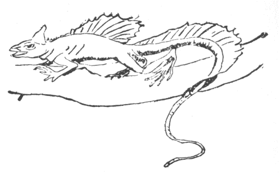
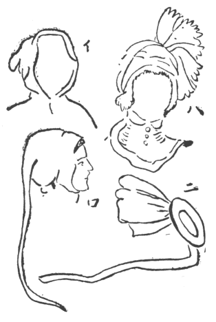
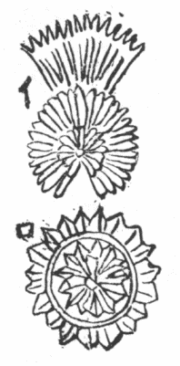
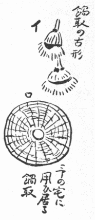

晋の
宗懍の『
荊楚歳時記』註に魏の
董
の『問礼俗』に曰く、正月一日を鶏と
為し、二日を
狗と為し、三日を羊、四日を
猪、五日を牛、六日を馬、七日を人と為す。正旦鶏を門に
画き、七日人を帳に
帖す、今一日鶏を殺さず、二日狗を殺さず、三日は羊、四日は猪、五日は牛、六日は馬を殺さず、七日刑を行わず（人を殺さず）またこの義なり云々。
旧く正旦より七日に至る間鶏を食うを忌む。故に歳首ただ新菜を食い、二日人鶏に福施すとありて、正月二日の御祝儀として特に人と鶏に御馳走をしたのだ。『淵鑑類函』一七に『宋書』に曰く、
歳朔、常に
葦莢、
桃梗を設け、鶏を宮および百司の門に
磔し以て悪気を
禳う。『襄元新語』に曰く、正朝に、県官、羊を殺してその頭を門に懸け、また鶏を磔してこれに
副う。俗説以て
 気
気を
厭すと
為す。元以て河南の伏君に問う、伏君曰く、これ土気
上升し、草木
萌動す。羊、百草を
齧み、鶏五穀を
啄む。故にこれを殺して以て生気を助くと。元旦から草木が生え出すを羊と鶏が食い荒すから、これを殺して植物の発芽を助くというのだ。『
琅邪代酔編』二に拠れば、董
の元日を鶏、二日を猪などとなす説は、漢の
東方朔の『占年書』に基づいたので、その日晴れればその物育ち、
陰れば
災いありとした。例せば元日晴れれば鶏がよく育ち、二日曇れば豚が育たぬなどだ。さて正月八日は穀の日で、この日の晴曇でその年の豊凶が知れるという説もあったそうだ。宋の
 元英
元英の『談藪』には道家言う、鶏犬を先にして人を後にするは、賤者は生じやすく貴者は育しがたければなりとある。漢の応劭の『風俗通』八を見ると〈
 平
平説、臘は刑を迎え徳を送る
所以なり、大寒至れば、常に陰勝つを恐る、故に
戌日を以て臘す、戌は温気なり、その気の日を用いて鶏を殺し以て刑徳を謝す、雄は門に著け雌は戸に著け、以て陰陽を和し、寒を調え水に配し、風雨を節するなり、青史子の書説、鶏は東方の牲なり、歳終り更始し、東作を弁秩す、万物戸に触れて
出づ、故に鶏を以て祀祭するなり〉と載せ、〈また俗説、鶏鳴まさに旦せんとす、人の起居を為す、門もまた昏に閉じ晨に開き、難を
扞ぎ固を守る、礼は功に報るを貴ぶ、故に門戸に鶏を用うるなり〉。これは鶏は朝早く鳴いて人を起し門戸を守る大功あれば、その報酬として鶏を殺し門戸に懸くるというので、鶏に取っては誠に迷惑な俗説じゃ。
蔡
の『独断』に、臘は歳終の大祭、吏民を
縦って宴飲せしむ。正月歳首また臘の儀のごとしとある。
件の『風俗通』に出た諸説を
攷えると、どうも最初十二月の臘の祭りの節、鶏を殺して門戸に懸けたのが後に元日の式となった事、ちょうど欧州諸国で新年の旧式が多くクリスマスへ繰り上げられたごとし。しかるに〈古はすなわち鶏を磔す、今はすなわち殺さず、また、正月一日、鶏鳴きて起き、まず庭前において爆竹し、以て
山
悪鬼を
辟く云々。画鶏を戸上に帖し、葦索をその上に懸け、
桃符をその傍に挿む、百鬼これを畏る〉と『荊楚歳時記』に載せ、註に董
いわく、今正臘の
旦、門前、烟火桃神を
作し、松柏を絞索し、鶏を殺して門戸に著け、疫を追うは礼なり。『括地図』にいわく、桃都山に大桃樹あり、盤屈三千里、上に金鶏あり、日照らせばすなわち鳴く。下に二神あり、一を
鬱、一を
塁と名づく、並びに葦の
索を執って不祥の
鬼を伺い、得ればすなわちこれを殺すと。『風俗通』八に黄帝書を引いていわく、上古の時、
荼と鬱てふ
昆弟二人、能く鬼を執らう。度朔山上の章桃樹下に百鬼を簡閲し、道理なく
妄りに人の禍害を
為す鬼を、荼と鬱と、葦縄で縛りて虎に食わす。故に県官常に臘
除夕を以て桃人を飾り、葦索を
垂れ、虎を門に画くとあり。桃人は『戦国策』に見える桃梗で、〈梗は更なり、歳終更始す、介祉を受くるなり〉とあれば、年末ごとに改めて新しいのを門に懸けた桃木製の人形らしく、後には単に人形を画いて
桃符といったらしい。和漢その他に桃を鬼が怖るるてふ俗信については『日本及日本人』七七七号九一頁に述べ置いた。
そこに書き洩らしたが加藤雀庵の『
囀り草』の虫の夢の巻に、千住の
飛鳥の社頭で毎年四月八日に
疫癘を
禳う符というを出すに、桃の木で作れり、支那に
倣うたのだろうとある。『本草図譜』五九に田村氏（元雄か）説とて、日本で桃で戸守り符を作る事なき由を言えるも例外はあったのだ。さて桃木製の人形が人を画いた桃符に代ったと
斉しく、鶏を磔に懸けたのが戸上に画鶏を貼り付けるに変わったのじゃ。何のために鶏を殺したかは、後に論ずるとして、鶏に縁厚い酉歳の書き始めに昔の支那人は元日に鶏を
磔にしたという事を述べ置く。
それから『荊楚歳時記』から引いた元旦の式を述べた上文、〈以て山
悪鬼を辟く〉の次に、〈長幼ことごとく衣冠を正し、次を以て拝賀し、
椒柏酒を進め、桃湯を飲み
屠蘇を進む云々、各一鶏子を進む〉とあって、註に『周処風土記』に曰く、正旦まさに生ながら鶏子一枚を呑むべし、これを錬形というとある。鶏卵を呑んで新年の身体を固めたのだ。それから『煉化篇』を案ずるにいわく、正旦鶏子赤豆七枚を呑み
瘟気を辟くとあるが、鶏卵七つも呑んでは礼廻りの途上で立ちすくみになり、二日のひめ始めが極めて待ち遠だろうから直ちに改造と出掛けたものか、『
肘後方』には元旦および七日に、麻子、小豆、各十四枚を呑めば疾疫を消すとあって、卵は抜きとされおり、梁の武帝、厳に動物食を制してより、元旦に鶏卵を食うは全廃となったとある。
鶏卵をめでたい物とする事西洋にも多い。グベルナチス伯の『動物譚原』二巻二九一頁にいわく、鶏卵天にありては太陽を表わす。白い牝鶏は金の
雛を産むとて特に尊ばる。イタリアのモンフェラトではキリスト昇天日に新しい巣で生まれた卵は胃と頭と耳の痛みを治し、麦畑に持ち往けば麦奴の侵害を予防し、
葡萄園に持ち往けばその葡萄が
霰に損ぜずと信ぜらる。復活祭の節、キリスト教徒が鶏卵を食い相
贈遺するに付いて、諸他の習俗、歌唄、諺話、欧州に多いが、要するに天の卵より雛の生まれ出るにキリストの復活を比べ、兼ねて春日の優に到ると作物の豊饒を祝うたのだ。古ギリシアやインドの創世紀は金の卵に始まり、世界は金の卵より動き始め、動くは善の原則たり、光明あり労働し利世する日は金の卵に生ず、故に一日の始めに卵を食うは吉相で、ラテン語の
諺にアブ・オヴォ・アド・マルム（善より悪へ）というはもと卵より
林檎への義だ。古ラテン人は食事の初めに煮固めた卵、さてしまいに林檎を食ったので、今もイタリアにその通り行う家族多し、また古ギリシアの諺にエキス・オウ・エキセルテン、卵より生まるというは絶世の美人を指したので、その由来は、大神ゼウスがスパルタ王ツンダレオスの妻レーダに懸想し、天鵞に化けてこれを
孕ませ二卵を産んだ。その一つから艶色無類でトロイ戦争の基因たるヘレネー女、今一つから、カストルとポルクスてふ双生児が生まれたからだとあるが、天鵞形の神に孕まされて生んだ卵は天鵞卵で鶏卵でなかろう。何に致せグベルナチス伯の言のごとく、世界は金の卵から動き始める理窟だから、金の卵の
噺から書き始めようとしても、幾久しく聞き馴れた月並の
御伽噺にありふれた事では面白からず、因って絶体絶命、金の卵の代りにキンダマ
譚からやり始める。
けだし金の卵とキンダマ、国音相近きを以てなるのみならず、梵語でもアンダなる一語は卵をも睾丸をも意味するからだ。支那でも明の劉若愚の『四朝宮史酌中志』一九に内臣が好んで
不腆の物を食うを序して、〈また羊白腰とはすなわち外腎卵なり、白牡馬の卵に至りてもっとも珍奇と為す、竜卵という〉。『笑林広記』に孕んだ子の男女いずれと卜者に問うに、〈卜し
訖りて手を拱いて曰く、恭喜すこれ個の卵を
夾むもの、その人甚だ喜び、いわく男子たること疑いなし、産するに及びてかえってこれ一女なり、因って往きてこれを咎む、卜者曰く、これ男に卵あり、これ女これを夾む、卵を夾む物あるは女子にあらずして何ぞ〉。睾丸を卵と呼んだのだ。グベルナチス伯曰く、古ローマ人の迷信に牝鶏が卵を伏せ居る最中に雷鳴すれば、その卵敗れて
孵らずと、プリニウス説にこれを防ぐには卵の下草の下に鉄釘一本、または
犁のサキで
済い
揚げた土を置けば
敗れずと、コルメラは月桂の小枝とニンニクの根と鉄釘を置けと言った。これ電を鉄製の武器とし、また落雷の際、硫黄の臭あるより、似た物は似た物で防ぐてふ考えから、釘と硫黄に似た臭ある枝や根で防ぎ得としたのだ。今もシシリーでは牝鶏が卵を伏せ居る巣の底へ釘一本置きて、未生の雛に害あるすべての騒々しい音を、釘が呼び集め吸収すると信ず。さて珍な事はインドの『
委陀』に雷神
帝釈を祈る
偈あり「帝釈よ、我輩を害するなかれ、我輩を
壊るなかれ、我輩の愛好する歓楽を取り去るなかれ、ああ大神よ、ああ強き神よ、我輩のアンダ（睾丸または卵）を潰すなかれ、我輩腹中の果を破るなかれ」と。これは帝釈は自分去勢されたが（帝釈雄鶏に化けて
瞿曇仙人の不在に乗じ、その妻アハリアに通じ、仙人
詛うてその勢を去った譚は前（別項猴の話）に出した）、雷、震して人を去勢し能うとインド人は信じたのだと。わが邦でも落雷などで極めて驚くと睾丸釣り上がると言うが、インドでは釣り上がるどころか天上して失せおわるとしたのだ。
件の偈は牝鶏が卵を雷に破らるるを
惧れて唱うるようにも、男子が雷に睾丸を天まで釣り上げらるるを憂いてのようにも聞える。実に人間に取ってこれほど大事の物なく、一七〇七年にオランダで出版したシャール・アンションの『
閹人論』はジュール・ゲイの大著『恋愛婦女婚姻書籍目録』巻三に出るが、余が大英博物館で読んだアンションの『閹人顕正論』は一七一八年ロンドン刊行で、よほど
稀覯の物と見え、右の目録にも見えぬ。因って全部二百六十四頁を手ずから写し只今眼前にある。これはオランダ板の英訳かまたまるで別書か目下英仏の博識連へ問い合せ中だ。十八世紀の始め頃欧州で虚栄に満ちた若い婦女が力なき老衰人に嫁する事
荐りなりしを慨し、閹人の種類をことごとく挙げて、陽精
涸渇した男に嫁するは閹人の妻たるに等しく何の楽しみもなければ、それより生ずる道徳の頽敗寒心すべきもの多しとて、広く
娶入り盛りの女や、その両親に
諭した親切至れる訓誡の書だ。著者アンションは宗教上の意地より生国フランスからドイツへ脱走し、プロシャで重用され教育上の功大いに、また碩儒ライブニツと協力してベルリン学士会院を創立した偉人で、その玄孫ヨハン・アンションも史家兼政治家として人物だった。その『閹人顕正論』の四二頁
已下にいわく、十一世紀にギリシア人、イタリアのベネヴェント公と戦い、
甚くこれを苦しめた後、スポレト侯チッバルドこれを
援けてギリシア軍を破り、数人を捕えこれを宮してギリシアの将軍に送り、ギリシア帝は特に閹人を愛するからこれだけ閹人を
拵えて進ずる、なおまた勝軍して一層多く拵えて進ぜようと言いやった。その後また多くギリシア人を虜して一日ことごとくこれを宮せんとす。
爾時その捕虜の一妻大忙ぎで走り込み、侯と話さんと乞うた。侯その女に何故さように泣き叫ぶかと問うと、女
対えて「わが君よ、君ほどの勇将がギリシアの男子が君に抵抗し能わざるに乗じ、か弱き女人と戦うて
娯しまんとするを妾は怪しむ」といった。侯昔女人国が他国の男子と戦うた以来かつて男子が女子と戦うたと聞かぬというと、ギリシア婦人いわく「わが君よ、妾らの夫にある物あって妾輩に健康と快楽と子女を与う。その大事の物を夫の身より奪い去るとは、世にこれほど女人と戦い苦しむる悪業またあるべきや、これ夫を宮するならず実に妾輩を去勢するに当る。過ぐる数日間わが蔵品家畜を君の軍勢に多く
掠められたが苦情を述べず」と言いさして侯の面を見詰め、「心安い多くの婦人から奪われた大事の物の紛失は
癒すに
術なきを見てやむをえず、勝者の
愍憐を乞いに来ました」と、この質直な陳述を聴いていかでか感ぜざらん、大いに同情してその女に夫ばかりか掠奪物一切を還しやったとあれば、他の捕虜どもは皆去勢されたので「高縄の花屋へ来るも来るも
後家」、「痛むべし四十余人の後家が出来」とある。亭主に死に別れたは
諦めも付こうが、これはまた生きながら死んだも同然の亭主の顔を見るたびに想い出す、事実上の後家が大勢出来たのだ。さて彼女が夫を
伴れ去らんとするに臨み、侯呼び還して、今後また汝の夫が
干戈を執ってわが軍に向わばどう処分すべきやと尋ねると、女大いにせき込んで「眼も鼻も手足もわが夫の物なれば罪相応に取り去られよ、夫の身にありながら妾の専有たる大事の物は必ず残してくだされ」と、少しの笑顔も
悪からず、あぶないぞえと手を採って導き帰るぞ哀れなるとある。
昔趙人
藺相如が手に鶏を縛るの力なくして、秦廷に強勢の昭王をやりこめ天下に二つとない
和氏連城の玉を全うして還ったは、大枚の国費で若い女や料理人まで伴れ行き猫の
欠ほどの発言も
為し得なんだ人物と
霄壌だが、このギリシア婦人が揚威せる敵軍に直入して二つしかないその夫の大事の玉を助命して帰ったは、勇気貞操兼ね備わり、真に見揚げたとまで言い掛けたが、女を見揚ぐるはどこぞに野心あるからと仏が戒めたから中止として、谷本博士が言われた通り、婦女に喉を切る
嗜みなどを仕込むよりは、睾丸の命乞いは別として、勇胆弁才能く敵将を説伏するほどの心掛けを持たせたい事である。
俗に陰嚢の垂れたるは落ち着いた
徴で、昔武士が戦場で自分の剛臆を試むるに陰嚢を探って垂れ居るか縮み上ったかを検したというが、パッチ
股引ジャあるまいし甲冑を
著て
容易く探り得ただろうか。したがって陰嚢の垂れた人は気が長いという。これは本当で、かく申す熊楠のは
何時も
糸瓜のごとし。それ故か何事をも糸瓜とも思わず、ブラブラと日を送るから昨年の「猴に関する民俗と伝説」も
麁稿は完成しながら容易に清書せず忘れてしまい、歳迫ってようやく気が付き清書に掛かったが間に合わず、ついに民俗までで打ち切って伝説の部は出し得なんだに由って今この篇は先例を逆さまに伝説から書き始めた。こんな気の長い人が西洋にもあったものか、チャムバースの『ブック・オヴ・デイス』に珍譚あり。昔話に物言わずに生まれ付いた人が騎馬して橋を過ぐる内、顧みてその家来に汝は鶏卵を好くかと問うとハイ好きますと答えた。何事もなしに一年経って一日同じ橋を騎馬で過ぐる内、同じ家来に去年の問いを続けるつもりでどんなのをと問うと、家来も抜からず焼いたのであります。これよりも豪いのはグラスゴウ附近カムプシーちゅう所の牧師アーチブルド・デンニストンで、一六五五年その職を免ぜられ、王政恢復（一六六〇年）の後復職した。免職前に講演第一条を終った続きの第二条を復職後述ぶる発端に、時節は変ったが聖教はいつも変らぬと口を切ったそうだ。ところがこの牧師も
瞠若と尻餅を
搗かにゃならぬ珍報が一八六二年の諸新聞紙に出た。紀元七十九年ヴェスヴィウス山大噴火のみぎり、ポンペイ市全滅に際しその大戯場で演劇を催しいた実跡あるに乗じ、今度ランギニてふ山師がポンペイの廃趾に戯場を建て、初演の広告に当戯場は千八百年目にいよいよまた「行儀の娘」の外題で開演するに付き、前の座主マルクス・キンツス・マルチウスの経営中に劣らず
出精致しますれば、貴顕紳士は相替らず
御贔屓御入来を願うと張り出した。熊楠いう、東洋にはずっと豪いのがあって、玄奘三蔵の『大唐西域記』巻十二
烏※国［＃「金＋殺」、U+93A9、140-14］の条に、その都の西二百余里の大山頂に
卒都婆あり、土俗曰く、数百年前この山の崖崩れた中に
比丘瞑目して坐し、躯量偉大、形容
枯槁し、
鬚髪下垂して肩に
被り面に
蒙る。王も都人も見物に出懸け
香花を供う、この巨人は誰だろうと王が言うと、一僧これは
袈裟を掛け居るから
滅心定に入った阿羅漢だろう、この定に入るに期限あり、
 稚
稚（わが邦の寺で
敲き鳴らす雲板、チョウハンの類）の音を聞けば起るとも、日光に触れば起るともいう、さもない間は動かず、
定の力で身体壊れず、かく久しく断食した人が定を出たら
酥油を注いで全身を
潤し、さて
稚を鳴らして
寤ますがよいと答えた。その通りして音を立てる事わずかにして羅漢眼を開き、久しく見廻して汝ら何人で形容卑劣なくせに尊い袈裟を被るぞと問うた。かの僧我は比丘だと答うると、しからば我師
迦葉波如来は今
何処にありやと問う。かの如来は
大涅槃に入りて既に久しと聞いて目を閉じ残念な顔付しまた釈迦如来は世に出たかと問うから、昔生まれて世を導きすでに
寂滅されたと答う。久しく頭を
俯した後
虚空に昇り、自分で火を出し身を
焚いて遺骸地に堕ちたのを、王が収めてこの塔を立てたと見ゆ。
誰も知る通り婆羅門教に今の時代を
悪劫とするに反し、仏教には
賢劫と称す。この賢劫に四仏既に出た。人寿五万歳の時
拘留孫仏、人寿四万歳の時
倶那含牟尼仏、人寿二万歳の時迦葉波仏、人寿百歳の時釈迦牟尼仏が出て今の仏法を説いた。それより段々減じて人寿十歳、身の
長一尺、女人生まれて五月にして嫁す。人気至って悪く悪行する者は人に敬せられ、草木瓦石を執るも皆刀剣とあり、横死無数なり。その時山に
蔵るる者ただ一万人残る。他の人種相殺し尽した
後出で来り相見て慈心を起し共に善法を行う。その
功徳で百年ごとに一年ずつ命が増す、人寿八万四千歳に上りそれより八万歳を減ずる時賢劫の第五仏
弥勒仏が出る。減じたというものの、人の命が八万年でそれより一年も若くて死ぬ者なく、女人は五百歳で
方に嫁す。日に妙楽を受け、
禅定に遊ぶ事三禅の天人のごとく常に慈心ありて恭敬和順し一切殺生せず。ただ飲食便利衰老の煩を免るる能わず。香美の稲ありて一度
種うれば七度収穫され、百味具足し口に入ればたちまち消化す。大小便の時地裂け赤蓮花を生じて穢気を
蔽うとあるから、そんな結構な時代の人もやはり臭い糞は垂れるのだ。人民老ゆれば自然に樹下に往き、念仏して静かに往生し、大梵天や諸仏の前に生まる。その時の聖王に子千人と四大宝蔵あって中に珍宝満つ。衆人これを見て
貪著せず、釈迦仏の時昔の衆生この宝のために
相偸劫して罪を造ったと各
呆れる。その時弥勒仏生まれて
成道し、
件の聖王その
悴九百九十九人と弟子となって出家し一子のみ出家せずに王位を
嗣ぐ。弥勒世尊、
翅頭末城外の
金剛荘厳道場竜華菩提樹下で成道する。この樹は枝が宝竜のごとく百の
宝華を吐く故この名あり。初めに金剛座上で説法し九十六億人阿羅漢を得、二会と三会に城外の華林園で説法し、九十四億と九十二億の人が阿羅漢となる。これを竜華の三会といって馬琴の『八犬伝』の文句にも出れば、弥陀の念仏流行して西方浄土往きの切符大投げ売りとなるまでは、キリスト教の多くの聖人大士が極楽へ直通りせず最終裁判の日を待ち合すごとく、弘法大師その他の名僧信徒、
殊に
畏れ多いが至尊で落飾された方々もこの弥勒の出世をあるいは入定したり、あるいは天上霊域で待ち合され居るはずとさる高僧から承った。とにかく昔の仏徒が弥勒の出世を
竢つ事、古いキリスト教徒がミルレニウムを竢ったごとく、したがって、中国や朝鮮で弥勒と
僭号して乱を
作した者もありと記憶し、本邦でも弥勒十年辰の年など
万歳が唱え祝い、余幼時「大和国がら女の
呼いおとこ弥勒の世じゃわいな」てふ俚謡を聞いた。およそ仏教の諸経に、弥勒の世界と
鬱単越洲を記せる、その人間全く無差別で平等で、これが西洋で説かれていたら遠くの昔に弥勒社会主義とかようのものが大いに起ったはずだが、東洋には上述の僅々小人がこれを冒して、小暴動を起したくらいに止まり、わが邦では古く帝皇以下ことごとくその経文を篤信して静かにその出世を竢たれたので、どんな結構な文も読む者の心得一つで危険思想も生ずれば、どんな異常な考えを述べた者も穏やかにこれを味わえば人心を和らげ文化を進めるに大益ありと判る。ただし『仏説観弥勒菩薩
下生経』に、この
閻浮提洲、弥勒の世となって、危険な物や
穢い物ことごとく消え失せ、人心均平、言辞一類となり、地は自然に香米を生じ、衣食一切の患苦なしとあるに、無数の宝を
蔵めた四大倉庫自然に現出すると、守蔵人、王に
白す。ただ願わくば大王この宝蔵の物を以てことごとく貧窮に施せと、
爾時大王この宝を
得已ってまた省録せず、ついに財物の想なしと言えるは辻褄が合わず、どんな暮しやすい世になっても、否暮しやすければやすいほど貧乏人は絶えぬ物と見える。さて、弥勒世尊無量の人と
耆闍崛山頂に登り、手ずから山峯を
擘く。その時梵王天の香油を以て大迦葉尊者の身に
灌ぎ、
大稚を鳴らし
大法螺を吹く音を聞いて、大迦葉すなわち
滅尽定より
覚め、衣服を斉整して
長跪合掌し、釈迦如来涅槃に臨んで大迦葉に付嘱した法衣を持って弥勒仏に授け奉る。釈迦の身長は一丈八尺とか、その法衣が弥勒仏の両指をわずかに
掩うはずと土宜法竜僧正から承った。さればこの時諸大衆今日この山頂に人頭の小虫
醜陋なるが僧服を著て世尊を礼拝するは珍なものだと嘲ると、弥勒世尊一同に向い、孔雀好色あれど鷹、
鶻鷂に食われ、白象無量の力あるを、獅子獣小さしといえども
撮り食らう事
塵土のごとし、大竜身無量にして
金翅鳥に
搏たる、人身長大にして、肥白端正に好しといえども、七宝の
瓶に糞を盛り、
汚穢堪うべからず、この人短小といえども、智慧錬金のごとく、煩悩の習久しく尽き、生死苦余すなし、護法の故にここに住み、常に
頭陀事を行う。天人中最も
勝れ、苦行与等なし、牟尼両足尊、遣わし来って我所に至る。汝らまさに一心に、合掌して
恭しく敬礼すべしと
偈を説き、釈迦牟尼世尊五濁の悪世に衆生を
教化した時、千二百五十弟子の中で頭陀第一、身体金色で、金色の美婦を捨て、出家学道昼夜精進して貧苦下賤の衆生を
慈愍し、
恒にこれを福度し、法のために世に住する摩訶迦葉とはこの人これなりと
呵するので一同睾丸縮み上って恐れ入る。一丈八尺の法衣が二指を掩い兼ねるほどの巨人の睾丸だから、一個の直径一
間は確かにある。そこで大迦葉尊者前述
烏※国［＃「金＋殺」、U+93A9、144-14］の
出定阿羅漢同様の芸当を演じ、自ら火化する骨を弥勒が拾うて塔婆を立つるという未来記だが、五十六億七千万年後のこと故信ずるにも足らねば疑うも気が利かぬ。ただ熊楠がここに一言するは、壮歳諸国を歴遊した頃は、逢う南中米のスペイン人ごとに余を軽視する事甚だしく、チノ・エス・エル・シウダッド・デル・ハボン（支那は日本の都）といって、日本とは支那の領地の片田舎と心得た者のみだった。かく肩身の狭い日本に生まれながら、その頃の若者はそれぞれ一癖も二癖もあり、吾輩自身も自分がかつてこれほどの事がよく出来たと驚くほどの働きをした。しかるに日本の肩味が広くなればなるほど、これが何で五大国の一かと重ね重ね怪しまるるほど日本人の実価が下ったように思う。孔雀好色あれど鷹に食われ、獅子小といえども大象を撮り食う事塵土のごとしという。弥勒、如来の
詞は分り切った事ながら各の身に当て省みるべきじゃ。『西域記』九には大迦葉が釈迦の法衣を守って入定し居る地を
鶏足山とす。三つの峯
聳えて鶏の足に似たから名づけたらしい（ビール英訳、二巻一四二頁註）、これは耆闍崛山と別だ。「迦葉尊者は鶏足に袈裟を守って閉じ籠る」という
和讃あれば、本邦では普通鶏足山に入定すとしたのだ。支那にも『史記』六に〈始皇
隴西北地を巡り、鶏頭山に出で、回中を過ぐ〉とある。鶏頭の形した山と見える。
（大正十年一月、『太陽』二七ノ一）
この稿を続けるに臨み
啓し置くは、鶏の伝説は余りに多いからその一部分を「桑名徳蔵と紀州串本港の
橋杭岩」と題して出し置いた。故川田
甕江先生は、
白石が
鳩巣に
宛てた
書翰と『
折焚柴の記』に浪人越前某の伝を同事異文で記したのを馬遷班固の文以上に
讃めたが、『太陽』へ出すこの文と『現代』へ寄せたかの文を
併せ読んだら、諸君は必ずよくもまあたった一つのこの鳥について、かくまで夥しい材料を、同じ
噺を重出せずに斉整して同時二篇に書き分けたものだ、南方さんは恐らく人間であるまいと驚嘆さるるに相違ない。さて前に釈迦の身長を記しながら「大仏の○○の太さは書き落し」で弥勒の身長を言い忘れたが、弥勒世界の人の身長は十六丈で弥勒仏の身長は三十二丈だ（『仏祖統記』三十）、また昔弥勒と
僭号した乱賊あったと記憶のまま書き置いたが、確かに見出した例を挙げると高麗王辛※
［＃「示＋禺」、U+7991、146-7］八年五月妖民伊金を誅す、伊金は固城の民で自ら弥勒仏と称し、衆を惑わして我能く釈迦仏を呼び寄せる。およそ神祇を
祀る者、馬牛肉を食う者、人に財を分たぬ者は必ず死ぬ、わが言を信ぜずば三月に至って日月光なし、またわれは草に青い花を咲かせ、木に穀を
実らせ、一度
種えて二度刈り取らしめ
能う。また山川の神をことごとく日本に送り倭賊を
擒にすべしなど宣言したので、愚民ども
城隍祠廟の神を
撤て去り、伊金を仏ごとく敬い福利を祈る、無頼の徒その弟子と称し
相誑かし、至る所の州郡守令出迎えて上舎に館する者あり、清州の牧使権和、その
渠首五人を捕斬しようやく
鎮まったという（『東国
通鑑』五一）、当時高麗人日本を畏るるに乗じ、弥勒仏と詐称した偽救世主が出た。その事極めて米国を怖るる昨今
大本教が頭を上げたと似て居る
ぞよ。怖れて騒ぐばかりでは何にもならぬ
ぞよ。支那にも北魏孝荘帝の時
冀州の沙門法慶、新仏出世と称し乱を
作した（『仏祖統記』三八）。
さて前回やり掛けた鶏足山の話を続ける。大迦葉が
入定して弥勒の
下生を待つ所を、
耆闍崛山とするは『涅槃経後分』に基づき、鶏足山とするは『付法蔵経』に拠る（『仏祖統紀』五）。『観弥勒菩薩下生経』に弥勒は鶏頭山に生まるべしとあれば、かたがたこの仏は鶏に縁厚いらしい。支那には雲南に鶏足山あり、一頂にして三足故名づく、山頂に
洞あり。迦葉これに籠って仏衣を守り弥勒を俟つという（『大清一統志』三一九）。本邦でも中尊寺の鶏足洞、遠州の鶏足山正法寺など、柳田氏の『
石神問答』に古く鶏を神とした俗より出た名のごとく書いたようだが、全く弥勒と迦葉の仏説に因った号と察する。
かく東洋では平等無差別の弥勒世界を心長く待つ迦葉と鶏足を縁厚しとし、したがって改造や普選の運動家はこれを
徽章に旗標に用いてしかるべき鶏の足も、所変われば
品変わるで、西洋では至って不祥な悪魔の表識とされ居るので面黒い。それは専ら中世盛んに信ぜられた妖鬼アスモデウスの話に基づき、その話はジスレリーの『文界奇観』等にしばしば繰り返され、殊にルサージュの傑作『ジアブル・ボアトー』に依って名高い。婬鬼の迷信は中古まで欧州で深く人心に
浸み込み、碩学高僧真面目にこれを
禦ぐ法を論ぜしもの少なからず。実体なき鬼が男女に化けて人と交わり、甚だしきは子を孕ませまた子を孕むというので、ローマの開祖ロムルスとレムス、ローマの第六王セルヴィウス・ツリウス、哲学者プラトンやアレキサンダー王、ギリシアの勇将アリストメネス、ローマの名将スキピオ・アフリカヌス、英国の術士メルリン、
耶蘇新教の創立者ルーテルなどいずれも婬鬼を父として生まれたとか（一八七九年パリ板シニストラリの『婬鬼論』五五頁）、わが邦には古く金剛山の聖人
染殿后を恋い餓死して黒鬼となり、衆人の面前も
憚らず后を
 乱
乱した譚あり（『今昔物語』二十の七）、近くは
一九の小説『
安本丹』に、安本屋丹吉の幽霊が昔
馴染の娼妓、人の妻となり、夫に添い
臥た所へ毎夜通い子を生まし
大捫択を起す事あり。欧州にも『ベルナルズス尊者伝』にナントの一婦その夫と臥た処を毎夜鬼に犯さるるに、夫熟睡して知らず、後
事露われ夫
惧れて妻を離縁したと載せ、スプレンゲルはある人鬼がその妻を犯すを
睹、刀を
揮うて斬れども更に斬れなんだと記す。ボダン説に鬼交は人交と異なるなし、ただ鬼の精冷たきを異とすと。支那でも『西遊記』に烏鶏国王を井に
陥れ封じた道士がその王に化けて国を治む、王の太子母后に尋ねて父王の身三年来氷のごとく冷たしと聞き、その
変化の物たるを知り、唐僧師弟の助力で獅子の本身を現わさしめ、父王を再活復位せしめたとある。仏説にも男女もしくは黄門（非男非女の中性人）が売婬で財を得、不浄身もて
妄りに施さば死後欲色餓鬼に生まれ、随意に美男美女に化けて人と交会すという（『正法念処経』一七）、一六三一年ローマ板ボルリの『
交趾支那伝道記』二一四頁に、その頃交趾に婬鬼多く、貴族の婦女これと通ずるを名誉とし、甚だしきはその種を宿して卵を生む者あり、しかるに貧民は婬鬼を厭うの余り天主教に帰依してこれを防いだと
出づ。宋朝以来南支那に盛んな五通神は、家畜の精が丈夫に化けて
暴かに人家に押し入り、美婦を強辱するのだ（『
聊斎志異』四）。けだし婬鬼に二源あり、一は男女の精神異態より、夢うつつの間に鬼と交わると感ずる者。今一つは若干の古ローマ帝が獣皮を被って婦女を姦したごとく、特種の性癖ある者があるいは秘社を結び、あるいは単独で巧みに鬼の
真似して実際婦女を犯したのだ。そのほかに人と通じながら世間を憚って鬼に犯されたと詐称したのもすこぶる多かろう。四十年ほど已前、紀州湯浅町の良家の若い妻が盆踊りを見に往きて海岸に


するところを、壮漢数輩
拉して沖の小島へ伴れ行き輪姦せしを本人も一族も
慙じて、大亀の背に乗せて島へ運ばれたと浦島子伝の翻案を言い触らしていた。古アッカジア人既に婬鬼を
攘う呪法を備え（一八七四年パリ板ルノルマン著『カルジアおよびアッカジア魔法篇』三六頁）、一八一七年板マーチンの『トンガ島人記』二巻一一九頁には、ホトア・ポウてふ邪神好んで悪戯して人を苦しむ。ハモア島民はこの神しばしば睡中婦女を犯し、ために孕まさるる者多し。けだし不貞を掩うによき口実だと記す。以て婬鬼の迷信がいかに古く、またいかな小島までも行われたるを知るに足る。南インドでは難産や経行中死んだ女はチュデル鬼となり、前は
嬋娟たる美女と見ゆれど、後は
凄愴たる骸骨で両肩なし、たまたま人に逢わば乞いてその家に伴れ行き、夜の友となりて六月内に彼を衰死せしむと信ず（エントホウエンの『グジャラット民俗記』一〇七および一五二頁）、かく諸方に多い婬鬼の中でアスモデウス最も
著わる。あるいはいう最初の女エヴァを誘惑した蛇、すなわちこの鬼だと。ウィエルス説に、この鬼、地獄で強勢の王たり。牛と人と山羊に類せる頭三つあり。蛇の尾、鵞の足を具え、
焔の息を吐き竜に乗りて左右手に旗と
矛を持つと（コラン・ド・ブランシー『妖怪辞彙』五板四六頁）、アラビアの古伝にいう、ソロモン王、アスモデウスの印環を奪いこれを
囚う。一日ソロモン秘事をアに問うに、わが鎖を
寛くし印環を還さば答うべしというた。ソロモン王その通りせしに、アたちまち王を
嚥み、他に一足を
駐めて両翅を天まで伸ばし、四百里外に王を吐き飛ばすを知る者なかった。かくてこの鬼、王に化けてその位に居る。ソロモン
落魄して、乞食し「説法者たるわれはかつてエルサレムでイスラエルに王たりき」と言い続く、たまたま会議中の師父輩が聞き付けて、
阿房の言う事は時々変るに、この乞食は同じ事のみ言うから意味ありげだとあって、内臣にこの頃王しばしば汝を見るやと問うと、
否と答えた。由って諸妃を訪うて、その房へ王来る事ありやと尋ねると、ありと答えた。そこで諸妃に注意して、王の足はどんな形かと問うた。けだし鬼の足は鶏の足のようだからだ。諸妃答えたは、王は不断
半履を
穿きて足を見せず、法に禁ぜられ居る時刻に、強いてわれわれを婬し、また母后バトシェバを犯さんとして、従わぬを怒り、ほとんど片裂せんとしたと。諸師父、さては妖怪に
極ったと急いで相集まり、印環と強勢の
符
を
鐫り付けた鎖を、乞食体の真王に渡し、導いて宮に入ると、今まで王位に座しいたアスモデウス大いに叫んで逃れ去り、ソロモン王位に復したと。ヘブリウの異伝には、アスモデウス身を隠してソロモン王の妃に通ぜしに、王その床辺に灰を撒布し、
旦に鶏足ごとき跡を印せるを見て、鬼王の
所為を認めたりという。この鬼の足、鵞足に似たりとも、鶏足に似たりともいう。
ドイツの俚説に灰上に
家鴨や鵞の足形を印すれば、
罔両ありと知るという（タイラー『原始人文篇』二板、二巻一九八頁）。東西洋ともに鬼の指を鳥の足のごとく画くは、過去地質期に人間の先祖が巨大異態の爬虫類と同時に生存して、
甚く怪しみ、怖れた遺風であろう。知人故ウィリヤム・フォーセル・カービー氏の『エストニアの勇士篇』にも諸国
蛟竜の
誕は右様の爬虫類、遠い昔に全滅したものより
転訛しただろうと言われた。実際鳥と爬虫とその足跡分別しがたいもの多く、『五雑俎』九の画竜三停九似の説にも、爪鷹に似るとあり。『
山海経』の図などに見るごとく、竜と鬼とは至って近いもの故、鬼の足、また手を鳥足ごとく想像したと見える。灰を撒いて鬼の足跡を検出する事は、拙文「幽霊に足なしという事」について見られよ。
鶏の霊験譚は随分あるがただ二、三を挙げよう。『諸社一覧』八に『太神宮神異記』を引いて、豊太閤の時朝鮮人来朝せしに、食用のためとて太神宮にいくらもある鶏を取り寄せ
籠に入れてあまた上せけるに、ほどなく皆返さる。これは朝鮮人の食物に毛をむしりたる鳥、
俎の上にて生きて
起ち上り時を作りけるに因ると。また『三国伝説』を引いて、三島の社に
目潰れたる鶏あり。いつも暗ければ時ならず時を作り、朝夕を
弁えず。風霜に苦しみ、食に乏しく、
痩せ衰うるを
愍み、ある修行者短冊を書き、鳥の頸に付くるに、たちまち目開く、その歌は「には鳥のなくねを神の聞きながら心強くも日を見せぬかな」とある。
耶蘇教国にもややこの類の話がスペインにある。昔青年あり老父母とサンチアゴ・デ・コンポステラへ巡礼に出た。サンチアゴ（英語でセント・ジェームス、仏語でサン・ジャク）大尊者はキリストの大弟子中、ペテロに
亜いだ勢力あり。その弟、ジョアンとともにキリストの雷子と呼ばる。
後殉教に臨みこれを訴えし者、その
為人に感動され、たちまちわれもまたキリスト教徒なりと自白し、伴い行きて刑に就く。途上尊者に向い罪を謝し、共に斬首された。この尊者かつてスペインに宣教したてふ旧伝あって、八三五年にイリアの僧正テオドミル、奇態な星に導かれてその遺体を見出してより、そこをカンポ・ステラ（星の原）、それが転じてコンポステラと呼ばれたという。コンポステラの
伽藍に尊者の屍を安置し霊験灼然とあって、中世諸国より巡礼日夜至って、押すな突くなの
賑い
劇しく、欧州第一の参詣場たり。因ってスペイン人は今も
銀河をエル・カミノ・デ・サンチアゴ（サンチアゴ道）と呼ぶ。これ『塩尻』巻四六に、中古吉野初瀬
詣で衰えて熊野参り繁昌し、王公
已下道者の往来絶えず、したがって
蟻が一道を行きてやまざるを熊野参りに比したとあり。今も南紀の小児、蟻を見れば「蟻もダンナもよってこい、熊野参りにしょうら」と唱うるは、昔熊野参り引きも切らざりし事、蟻群の行列際限を見ざるようだったに基づく。それと等しく銀河中の星の数、言語に絶して夥しきを、サンチアゴ詣での人数に比べたのだ。そのサンチアゴ・デ・コンポステラへ老父母と伴れて参る一青年が、途上サンドミンゴ・デラ・カルザダで一泊すると、宿主の娘が、一と目三井寺
焦るる胸を
主は察して
晩の鐘と、その
閨に忍んで打ち
口説けど聞き入れざるを恨み、青年の袋の内へ銀製の名器を入れ置き、彼わが家宝を盗んだと訴え、青年捕縛されて
串刺しに処せられた。双親老いて若い子の
冤刑に逢い、最も悲しい悲しさに涙の絶え間なしといえども、さてあるべきにあらざれば志すサンチアゴ詣でを済まし、三人伴れて出た故郷へ二人で帰る力なさ、せめて今一度亡児の跡を見収めにとサンドミンゴに立ち寄ると、確かに刑死を見届けたその子が息災で生きいた。これ全くサンチアゴ大尊者の霊験、世は
澆季に及ぶといえどもと、お定まりの文句で衆人驚嘆せざるなし。所の監督食事中この報に接し、更に信ぜず。確かに死んだあの青年が活き居るなら、ここにある鶏の焼き鳥も動き出すはずと、言いおわらざるに、その鶏たちまち羽生え時を作り、皿より飛び出で
遁げ去った。やがて宿主の娘は刑せられ、この霊験の故に鶏を神使と
崇め、サンドミンゴの家々今に鶏毛もて飾らるという事じゃ（グベルナチスの『動物譚原』二巻二八三頁。参取。『大英百科全書』一五巻一三五頁。二四巻一九二頁）。
サウシーの『随得手録』三輯記する所はやや異なるなり。いわくサンドミンゴ・デラ・カルザダで一女巡礼男に据え膳を拒まれた意趣返しに、その手荷物中に銀の
什器を入れ窃盗と
誣告す。その手荷物を検するに果して銀器あり。因って絞殺に処せられ、屍を絞架上に釣り下げ置かる。かの男の父、その子の成り行きを知らず、商いしてここへ来ると、絞台上から子が父を呼び留め、仔細を語り、直ちにその冤を奉行に報ぜしむ。奉行ちょうど膳に向い、鶏、
一番いを味わわんとするところで、この鶏復活したらそんな話も信ぜられようと言うや否や、鶏たちまち羽毛を生じて起ち上った。大騒ぎとなってかの男を絞架より卸したとあれど、そのしまいは記されず。ただしその絞架を寺の上に据え、その時復活した白い雌雄の鶏を祭壇の側に
畜うたが、数百年生きていたと。サウシーの『コンポステラ巡礼物語』はこれを
敷衍したものだ。
件のサンチアゴ大尊者は、スペイン国の守護尊として特に尊ばれ、クラヴィホその他の戦場にしばしば現われてその軍を助けたという。
カンポステラに詣で、これを拝する者は、皆
杓子貝を
佩ぶ。その事日本の巡礼
輩が杓子貝を帯ぶるに合うとは、多賀や宮島に詣る者、杓子を求め帰るを誤聞したものか。英国にも杓子貝を紋とする貴族二十五家まであるは、昔カンポステラ巡礼の盛大なりしを忍ばせる。
昔この尊者の遺体を、大理石作りの船でエルサレムよりスペインへ渡す。ポルトガルの一武士の乗馬これを見、驚いて海に入ったのを救い上げて見ると、その武士の衣裳全く杓子貝に付き
覆われいた。霊験記念のためこの
介を、この尊者の標章とする由。英国ではこの尊者の忌日、七月二十五日に
牡蠣を食えば年中金乏しからずとて、価を
吝まずこの日売り初めの牡蠣を食い、牡蠣料理店大いに忙し。店に捨てた多くの
空殻を集めて小児が積み上げ、その上に蝋燭を
点し、行人に一銭を乞いてその料とす。定めて杓子貝に近いもの故だろう（チャンバースの『ブック・オヴ・デイス』二巻一二二頁。ハズリット『諸信および俚伝』二巻三四四頁）。
鶏に係わる因果譚や報応譚は極めて多い。今ただ二、三を掲ぐ。『新著聞集』酬恩篇に、相馬家中の富田作兵衛二階に仮寝した夢に、美女来って只今我殺さるるを助けたまわば、末々御守りとも成らんという。起きて二階を下り見れば、傍輩ども牝鶏を殺す所なり。只今かかる夢を見しこの鳥、我にと、強いて乞い受け、日比谷の神明に放つ。殿の母公聞きて優しき事と、作兵衛に樽肴を賜わる。その
後別の奉公の品もなきに、二百五十石新恩を拝領せしは、寛文中の事とあり。またその
殃禍篇に、美濃の
御嶽村の土屋某、
日来好んで鶏卵を食いしが、いつしか頭ことごとく
禿げて、
後鶏の
産毛一面に生じたと載す。支那でも周の武帝鶏卵を好き食い、
抜彪なる者、御食を進め寵せらる。隋朝起ってなお文帝に
事え食を進む。この人死後三日に
蘇り、文帝に申せしは、死して
冥府に至ると、冥府の王汝武帝に進めし
白団いくばくぞと問う。彪、何の事か解せず。傍の人、白団とは鶏卵じゃと教えたので、武帝が食うた卵の数は知れぬと答う。しからば帝食うただけの卵を出すべしとて、
牛頭人身の獄卒して、
鉄床上に
臥したる帝を鉄梁もて
圧えしむるに、両肩裂けて十余石ばかりの卵こぼれ
出づ。帝、彪に向い、汝
娑婆に還って大隋天子に告げ、我がこの苦を免れしめよと言うたと。文帝、すなわち天下に勅し、毎人一銭を出して武帝の追福を修めたそうだ（『法苑珠林』九四）。
こんな詰まらぬ
法螺談も、
盗跖は
飴を以て
鑰を開くの例で、随分有益な参考になるというのは、昨今中央政府の遣り方の無鉄砲に倣い、府県
争うて無用の事業を起し、無用の官吏を置くに随い、遊興税から庭園税、それから何々と、
税目日に新たなるを加うる様子だが、ややもすれば名は多少違いながら、実は同じ物から、二重三重取りになるから、色々と抗議が出る。そこで余は隋帝の
故智に倣い、秀吉とか家康とか種々雑多の人物が国家のために殺生した
業報で、地獄に落ちおるのを救うためと称して、毎度一人一銭ずつの追福税を厳課し、出さぬ奴の先霊もたちまち地獄へ落ちると
脅したら、何がさて大本教を信ぜぬと目が潰れるなど信ずる愚民の多い世の中、
一廉の実入りを収め得るに相違ない。末広一雄君の『人生百不思議』に曰く、日本人は西洋人と異なり、神を濫造し、また
黜陟変更すと。既に先年
合祀を強行して、いわゆる基本財産の多寡を標準とし、
賄贈請託を
魂胆とし、邦家発達の次第を
攷うるに大必要なる古社を滅却し、一夜造りの淫祠を昇格し、その余弊今に除かれず、大いに人心
蕩乱、気風壊敗を致すの
本となった。しかし毒食らわば皿までじゃ。むしろその事、葬式、問い弔いを官営として坊主どもを
乾し上げ、また人ごとに一銭の追福税を課し、
小野篁などこの世と地獄を懸け持ちで勤務した例もあり、せせこましい官吏どもに正六位の勲百等のと虚号をやったって何の役に立たず、恐敬もされぬから、大抵人民を苦しめた上は神をすら濫造黜陟する御威勢で、それぞれ地獄の官職に栄転させ、中国で貨幣を
画き焼いて冥府へ届くるごとく、附け木へ六道銭を描いて月給に遣わすべしだ。それから今一つよい税源は、余が大正二年八月十四日の『不二新聞』へ書いた通り十四世紀のエジプト王ナーシルは、難渋な財政を救うべく、
毎に女官をして高位の婦女の隠事を検せしめ、不貞税というやつを重く取り立てた。同世紀に文化を誇った仏国にも、ロア・デ・リボー（
淫猥王）わが邦中古
傀儡の長吏様の親方が所々にあって
本夫外の男と親しむ女人より金五片ずつの税を徴した（ミュアーの『
埃及奴隷王朝史』八三頁、ジュフールの『
売靨史』四巻二四頁）。現今わが邦男女不貞の行い夥しく、
生温い訓誡や、説法ではやむべくもあらざれば、すべからくこれに禁止税を掛くるべく、うるさく附け
纒われて程の知れぬ口留め料を警官や新聞に取らるるより、一と思いに取ってくださる、御国のためだと思うてすれば、天井で鼠が忠と鳴くと、鼠鳴きして悦び合い、密会税何回分と纒めて前以て払い済ます事疑いなし。これほど気の利いた社会政策はちょっとなかろう。
増訂漢魏叢書本『捜神記』巻二に地獄の官人の話あり、鶏に関係ある故ここに略説する。
太原の人、王子珍、父母の勧めにより、定州の辺孝先先生に学ばんとて旅立った。辺先生は漢代高名の大儒で、孔子歿後ただ一人と称せらる。子珍、定州界内に入りて路傍の樹蔭に
息む所へまた一人来り
憩い、汝は
何人で
何処へ往くかと尋ねた。子珍事由を語ると、その人我は
渤海郡の生まれ、李玄石と名づく、やはり辺先生の所へ学びに往く、かく道伴れとなる
已上は兄弟分になろうと言い出たので、子珍も同意し、定州に至り飲酒食肉し、死生、貴賤、情皆これを一にせんと誓いおわって辺先生を訪い入門した。経業を学ぶ事三年にして玄石の才芸先生に過ぎたから、先生玄石は聖人であろうと讃めた。子珍その才の玄石に劣れるを知り、
毎にその教授を受け師父として敬った。
後子珍と同族で、同地生まれの王仲祥という人来合せ、まず先生に謁し、次ぎに子珍の宿に止まり、李玄石を見、翌日別れに臨み、子珍に、汝の友玄石は
鬼だ、生きた人でないと告げると、子珍、玄石はこれ上聖の聖で、経書該博ならざるなく、辺先生すらこれを推歎す、何ぞこれを人でないと言うべきと答えた。仲祥、我は才芸を論ずるでない、確かに彼を鬼と知って言うのだ。汝もし信ぜずば今夜新しい葉を
席の下に
鋪いて、別々に臥して見よ、明朝に至り汝の
榻下の葉は実するも、鬼の
臥所の葉は
虚しかるべしと言うて別れ出た。夜に及んで仲祥の言に従い試みると、暁に及び果してその通りだったから、翌日玄石に、君は鬼だという
噂がある、本当かと問うと、玄石、誠に我は鬼だ、この事は仲祥から聞いただろう、我冥司に挙用されて、泰山の主簿たらんとするも、学薄うして該通ならず。冥王の勧めに従い、辺先生に業を求めんとするに人間が我を
懼るるを憚り、人に化して汝と同師に
事え、一年を経ずして学問既に成り、泰山主簿に任じて二年になるが、兄弟分たる汝と別るるに忍びず、
眷恋相伴うて今に至った。既に実情を知られた上は久しく
駐まるべきでないから別れよう、しかるに汝に知らさにゃならぬ一事あり、前日汝の父の冤家が、冥王庁へ汝の父にその孫や兄弟を食われたと訴え出たが、われ汝と縁厚きによりすみやかに裁断せず、冥王これを怒って我を
笞うつ事一百、それより背が痛んでならぬ、さて只今王が汝の父を
喚び寄せ、自ら訊問し判して死籍に入れるところだから、汝急いで家に帰れ、さて父がまだ
息しいたら救い得る故、清酒、
鹿脯を供えて我を祭り、我名を三度呼べ、我必ず至るべし。もし気絶えいたら救いようがない。汝すでに学成ったから努力して立身を
謀れ、我まさに汝を助けて
齢を延ばし、上帝に請いて汝に官栄を与うべし、また疾病なきを
保せんと言って別れた。
子珍すなわち辺先生を辞し、家に帰って父を見るに、なお息しいるので、火急に酒脯銭財を郊に
致し、祭り、三たびその名を呼ぶと、玄石白馬に乗り、朱衣を
著け、
冠蓋前後騎従数十人、別に二人の青衣あって節を執って前引し、
呵殿して来り、子珍
相見えて
一に旧時のごとし。玄石、子珍に語るよう、汝眼を閉じよ、汝を伴れ去って父を見せようと。珍目を閉づるに
須臾にして
閻羅王所の門に至り北に向って置かる。玄石、子珍に語ったは、
向きに汝を伴れて汝の父を見せんと思いしも、汝の父、今牢獄にあって極めて見苦しければ、今更見るべきにあらず。暫くの内に汝が父の冤家がここへ来る、白衣を
著、
跣足で頭に紫巾を
戴き、手に一巻の文書を
把る者がそれだ。その人は

れ時にこの庁に入って証問さるるはずだ。われ汝に弓箭を与え置くから、それを取ってかの人来るを
候い、よくこれを射殺さば汝の父は必ず活くべきも、殺し損わば救いがたいという内に、果して右様の人がやって来た。玄石サアこれだ、我は役所に入って判決するから、汝はしっかりやれと言うて去った。いくばくならずして冤家直ちに
案前に来り、陳訴する
詞至って毒々し。子珍矢を放つと、その左眼に
中り、驚いて文書を捨て置き走り出た。文書を取って読むに、子珍の父の事を論じあった。珍泣いて玄石に告げると、射殺さなんだは残念だ、眼が癒えたらますます
訟えるに相違ない。汝
宜しく家に帰り冤家を尋ね出して殺すべし。しかれば汝の父はきっと癒るという。珍、何人を尋ぬべきやと問うに、今汝が射たと似た者を見ば、やにわに射殺せと教えた。珍、
倉皇別れ、帰って、冤家の姓名を知らねば誰と尋ぬべきにあらず。思い悩みて七日食わず。その時家人報ずらく、飼い置いた白い牡鶏が、この七日間往き所知れずと。因って一同尋ねてその白鶏が
架墻の上に坐せるを見出すに、左の眼損えり。王子珍考えて、玄石が言うたところの白衣は白鶏の毛、紫巾を戴くとは鶏冠、跣足とは鶏の足、左の眼
潰れたるは我が射
中てたのだ。この鶏こそ我父の冤家なれと悟り、殺し
烹て汁にして父に食わすと平癒した。子珍、後に出世して太原の刺史となり、百三十八歳まで長生したは李玄石の
陰祐による。〈故にいわく、鶏三年ならず、犬六載ならず、白鶏白犬これを食うべからず、生を害うなり〉とある。わが邦で猫を飼う初めに何年と時を定めて飼うと、期限来れば去ってまた来らず。余り久しく飼えば
猫又に化け「猫じゃ猫じゃとおっしゃりますな、アニャニャニャンノニャン」と謡い踊るというごとく、晋時支那では、鶏を三年、犬を六載以上飼わず、白い犬鶏は必ず食わぬものでこれを食えば
冥罰を受くると信じたのだ。今も白鶏は
在家に過ぎたものとし、寺社に専ら飼う所あり。
讃岐琴平に多く
畜う（『郷土研究』二巻三号、三浦魯一氏報）、『古語拾遺』に、白鶏、白猪、白馬もて
御歳の神を祭ると見え、『塩尻』四に〈『地鏡』に曰く、名山に入るには必ずまず斎すること五十日、白犬を牽き白鶏を抱き云々〉。ゴムの『歴史科学としての民俗学』三十一頁に、インドのカッボア人は、白鶏を
牲して隠財を求むといい、コラン・ド・ブランシーの『遺宝霊像評彙』一巻六四頁には、天主教徒白鶏をクリストフ尊者に捧げて、指端の痛みを
癒しもらう。他の色の鶏を捧ぐればますます痛むと見ゆ。熊野地方では天狗が時に白鶏に化け現わるという。支那湖南の衡州府華光寺に、昔禅師あって白鶏を養う。経を
誦するごとに座に登って聴く。死して寺側に埋めし上に白蓮花を生じ、花謝して泉水涌き出づ。白鶏泉と名づく（『大清一統志』二二四）。
諸国あまねく白鶏を殊勝の物としたのだ。
（大正十年二月、『太陽』二七ノ二）
『甲子夜話』続一七にいわく、ある老人耳聞えず、常に子孫に小言をいう。ある日客ありし時に子供を顧みて物語るは、今時の者はどうも不性なり。我らが若き時はかようにはなしという時、飼い置きし鶏
側より時をつくる。老人いわく、あれ聞きたまえ人ばかりでなし、鶏さえ今時は
羽敲きばかりして鳴きはしませぬと。かかる話は毎度繰り返さるるもので、数年前井上馨侯耳聾して、浄瑠璃語りの声段々昔より低くなった、今の鶏もしかりと
呟いたと新紙で読んだ。またいわく、ある侍今日は殊に
日和よしとて田舎へ
遊山に行き、先にて
自然薯を
貰い、
僕に持せて還る中途
鳶に
攫み去らる、僕主に告ぐ、
油揚ならば鳶も取るべきに、
薯は何にもなるまじと言えば、鳶、樹梢で鳴いてヒイ
トロロ、ヒイ
トロロ。一八九一年オックスフォード板、コドリングトンの『ゼ・メラネシアンス』に、癩人島の俗譚に十の
雛もてる牝鶏が雛をつれて食を求め、ギギンボ（自然薯の一種）を見付けるとその薯根
起ち出て一雛を食うた。由って鳶を呼ぶと鳶教えて一同を自分の下に隠す、所へ薯来って、鳶汝は鶏雛の所在を知らぬかと問うに、知らぬと答え、薯怒って鳶を
詈る。鳶すなわち飛び下って薯を
掴み、空を飛び舞いて地へ
堕すを、他の鳶が拾うて空を飛び廻ってまた落すと、薯二つに割れた。それを二つの鳶が分ち取ったから薯に味良いのと悪いのがあるようになったというと記す。面白くも何ともない話だが、未開の島民が薯に良し悪しあるを知って、その起因を説くため、かかる話を作り出したは理想力を全然
闕如せぬ証左で、日本とメラネシアほど
太く
距たった両地方に、偶然自然薯と鳶の話が各々出で来た。その偶合がちょっと不思議だ。
鶏を入れた笑談を少し述べると、熊野でよく聞くは、小百姓が耕作終って帰りがけに、烏がアホウクワと鳴くを聞いて、
鍬を忘れたと気付き、取り帰ってさすがは烏だ、内の鶏なんざあ何の役にも立たぬと
誹ると、鶏憤ってトテコーカアと鳴いたという。『
醒睡笑』二に、若衆あり、念者に向いて、今夜の夢に、鶏のひよこを一つ金にて作り、我に給いたるとみたと語ると、我も只今の夢にそのごとくなる物を参らせると、いやといってお返しあったと見た事よとある。西洋にはシセロ説に
寝牀の下に鶏卵一つ
匿されあると夢みた人が、判じに往くと、占うて、卵が匿され居ると見た所に財貨あるべしと告げた。由って掘り試むるに、銀あって中に夥しく金を
裹めり、その銀数片を夢判じにやると、銀より金が欲しい
思し召しから、
卵黄の方も少々戴きたいものだと言うたそうな。一五二五年頃出た『百笑談』てふ英国の逸書に、田舎
住居の富人が、一人子をオックスフォードへ教育にやって、二、三年して学校休みに帰宅した、一夜食事前に、その子、我日常専攻した論理学で、この皿に盛った二鶏の三鶏たるを証拠立つべしというので、父それは見ものだ、やって見よ、と命ずると、その子一手に一鶏を執ってここに一鶏ありといい、次に両手で二鶏を持ってここに二鶏ありといい、一と二を合せば三、故に総計三鶏ありと言うた。その時父自ら一鶏を取り、他の一鶏を妻に与えて、子に向い、一つは余、今一つは汝の母の分とする。第三番めの鶏は汝の論理の手際で汝自ら取って食え、と言ったので、子は夜食せずに済ませた。だから鈍才の者に理窟を習わすは、大いに愚な事と知るべしと
出づ。先頃手に鶏を縛るの力もないくせに、
一廉労働者の先覚顔して、煽動した因果
覿面、ちょっとした窓の修繕や半里足らずの人力車を頼んでも、不道理極まる高い賃を要求されて始めて驚き、自ら修繕し、自ら牽き走ろうにも力足らず、労働者どもがそんなに威張り出したも誰のおかげだ、義理知らずめと詈っても取り合ってくれず、身から出た
銹と自分を恨んで、ひもじく月を眺め、
膝栗毛を疲らせた者少なくなかったは、右の富人の愚息そのままだ。かく似て非なる者を、仏経には
烏骨鶏に比した。
六群
比丘とて仏弟子ながら、
毎も戒律を破る六人の僧あり。質帝隷居士、百味の食を作り、清僧を請じ、余り物もてこの六比丘を請ぜしに、油と塩で
熬た魚をくれぬが不足だ。それをくれたら施主が
好き名誉を得ると言うた。居士曰く、過去世に群鶏林中に住み、狸に侵し食われて雌鶏一つ残る。烏来ってこれに交わり一子を生む、その子鶏の声を聞きて父の烏が
偈を説いて言うたは、この児、我が有にあらず、野父と聚落母が共に合いてこの子あり、烏でもなく鶏でもなし、もし父の声を学ばんと欲せば、これ鶏の生むところ、もし母の鳴くを学ばんと欲せば、その父は烏なり。烏を学べば鶏鳴に似、鶏を学べば烏声を
作す。烏鶏二つながら兼ね学べば、これ二つともに成らずと。そのごとく魚を食いたがる貴僧らは俗人でも出家でもないと。仏これを聞いて、この居士は宿命通を以て六群比丘が昔鶏と烏の間の子たりしを見通しかく説いたのじゃと言うた（『
摩訶僧祇律』三四）、『沙石集』三に、質多居士は在俗の聖者で、善法比丘てふ腹悪き僧、
毎にかの家に往って供養を受く、ある時居士遠来の僧を供養するを
猜み、今日の供養は山海の珍物を尽されたが、ただなき物は
油糟ばかりと悪口した。居士油を売って渡世するを
譏ったのだ。そこで居士、只今思い合す事がある、諸国を行商した時、ある国に形は常の鶏のごとく、声は烏のようながあった。烏が鶏に生ませたによって形は母、音は父に似る故
烏鶏と名づくと聞いた。貴僧も姿は沙門、語は在家の語なるに付けて、かの烏鶏が思い出さると、やり込められて、善法比丘無言で立ち去ったとある。すべて昔は筆紙乏しく伝習に記憶を専らとした故、かく少しずつ話が変っていったものだ。烏が鶏に生ませた烏鶏とは、
烏骨鶏だ。色が黒い故かかる説を称えたので、その頃インドに少なかったと見える。ただし烏骨鶏に白いのもあって、大鬼が小鬼群を引きて心腹病を
流行らせに行く末後の一小鬼を、
夏侯弘が捉え、問うてその目的を知り、治方を尋ねると、白い烏骨鶏を殺して
心に当てよと教う。弘これを用いて十に八、九を癒した由（『本草綱目』四八）。
十六世紀に出たストラパロラの『面白き夜の物語』（ピャツェヴォリ・ノッチ）十三夜二譚は余未見の書、ソツジニが十五世紀に筆した物より採るという。人あり、百姓より
閹鶏数羽を買い、ある法師、その価を払うはずとて伴れて行く。既に法師の所に至り、その人法師に
囁き、この田舎者は貴僧に懺悔を聴いてもらうため来たと語り、さて、大声で上人即刻対面さるるぞと言うて出で行く。百姓は鶏代の事を法師に告げくれた事と心得、かの人の去るに任す。所へ法師来たので金を受け取ろうと手を出すと、法師は百姓に、
跪いて懺悔せよと命じ、自ら十字を
画き、
偈を
誦し始めた。これに似た落語を壮年の頃東京の寄席で聴いたは、さる男、吉原で春を買いて勘定無一文とは兼ねての覚悟、
附け
馬男を随えて帰る途上、一計を案じ、知りもせぬ石切屋に入りてその親方に小声で、門口に立ち居る男が新死人の石碑を註文に来たが、町不案内故
通事に来てやったと語り、さて両人の間を取り持ち種々応対する。用語いずれも意義二つあって、石切屋には石の事、附け馬には遊興の事とばかり解せられたから、両人相疑わず、一人は急ぐ註文と呑み込んで石碑を切りに掛かれば、一人は石を切り終って
揚代を代償さると心得て
竢つ内、文なし漢は両人承引の上はわれここに用なしと挨拶して去った。久しく掛かり碑を切り終って、互いに料金を要求するに及び、始めて食わされたと分るに及ぶ。その詐欺漢が二人間を通事する
辞なかなか
旨く、故正岡子規、秋山真之など、毎度その真似をやっていたが余は忘れしまった。今もそんな落語が行わるるなら誰か教えてくだされ。
ストラパロラの
件の話にある
閹鶏、伊語でカッポネ、英語でカポンは食用のため肥やさんとて去勢された鶏だ。本篇はキンダマの講釈から口を切って大喝采を博し居るから、閹鶏のついでに今一つキンダマに関する珍談を申そう。一一四七年頃生まれ七十四歳で歿したギラルズスの『イチネラリウム・カムブリエ』に曰くさ、ウェールスのある城主が、一囚人の睾丸と両眼を抜き去って城中に置くに、その人、砦内の込み入りたる階路をことごとくよく記憶し、自在にその諸部に往来す。一日彼城主の唯一の子を捉え、諸の戸を閉じて高き塔頂に上る、城主諸臣と塔下に走り行き、その子を
縦さば望むところを何なりとも
叶えやろうと言うたが、承知せず、城主自ら睾丸を切り去るにあらずんばたちまちその子を塔上より投下すべしと言い張った。何と
宥めても聴き入れぬ故、城主しかる上は余儀なしとて、睾丸を切ったような音を立て、同時に自身も諸臣も声高く叫んだ。その時、盲人城主にどこが痛いかと問い、城主腰が烈しく痛むと答えた。
盲と思うて人をだまそうとは
怪しからぬと罵って、子を投げそうだから、城主更に臣下して自身を
健か打たしめると、盲人また今度は一番どこが
疼いかと問うた。心臓と答うると、いよいよ急ぎ投げそうに見える。ここにおいて父やむをえず、
板額は門破り、荒木又右衛門は関所を破る、常磐御前とここの城主はわが子のために、大事な操と
陰嚢破ると、
大津絵どころか痛い目をしてわれとわが手で両丸くり抜いた。さて、今度はどこが一番疼むかと問うに、
対えて歯がひどく疼むというと、コイツは旨い。本当だ「玉抜いてこそ歯もうずくなれ」。汝は今後
世嗣を生む事ならず一生楽しみを
享け得ぬから、余は満足して死すべしと言いおわらざるに、盲人、城主の子を抱いて塔頭より飛び降り、形も分らぬまで砕け潰れ終った。されば
悋気深い女房に
折檻されたあげくの果てに、去勢を要求された場合には、委細承知は
仕れど、鰻やスッポンと事異なり、婦人方の見るべき料理でない。あちらを向いていなさいと彼方を向かせ、卒然変な音を立て高く
号び、どこが一番疼いと聞かれたら、歯が最も疼むと答うるに限る。
孟軻の語に、志士は
溝壑にあるを忘れず、勇士はその
元を
喪うを忘れずと。余は昨今のごとき騒々しい世にありて、キンダマの保全法くらいは是非
嗜み置かねばならぬと存ずる。
ベロアル・ド・ヴェルヴィユの『上達方』に、鶏卵の笑談あまたある。その一、二を挙げんに、マーゴーてふ下女、座敷の真中に坐せる主婦に鶏卵一つ
進らする途中、客人を見て
長揖する刹那、屁をひりたくなり、
力めて尻をすぼめる余勢に、
拳を握り過ぎて卵を潰し、大いに
愕いて手を
緩めると、同時に尻大いに開いて五十サンチの巨砲を
轟かしたが、さすがのしたたかもので、客の怪しみ問うに対してツイ豆をたべたものですからといったとある。その頃仏国でも豆は屁を催すと称えたのだ。全体この書は文句
麁野、下筆また流暢ならず、とても及ぶべくもないが、古今名人大一座で話し合う所を筆記した体に造った点が、馬琴の『昔語質屋庫』にやや似て居る。たとえば医聖ガリアンが、ブロアの一少婦が子を産み、その子女なりと聞いて、女の子は入らぬ元の所へ戻し入れておくれといったは面白いというと、古文家ボッジュが、緬羊児を買いてその尾に山羊児の尾を
接いだというのがあって一層面白いという（ここ脱文ありと見え意義多少分らず）、アスクレピアデスは、牝鶏よく卵を生むと見せるため、その肛門に卵を入れ置いたをある女が買ったが、爾後一向卵を産まなんだと語る所がある。
西鶴の『一代男』二、「旅の出来心」の条、江尻の宿女せし者の話に「また冬の夜は寝道具を貸すようにして貸さず、庭鳥のとまり竹に湯を仕掛けて、
夜深に鳴かせて夢
覚まさせて追い出し、色々つらく当りぬるその報いいかばかり、今
遁れてのありがたさよ云々」。この湯仕掛けで鶏を
早鳴せしむる法は中国書にもあったと記憶する。木曾の松本平の
倉科様ちゅう長者が、都へ宝
競べにとて、あまたの財宝を馬に積んで木曾街道を上り、
妻籠の宿に泊った晩、三人の強盗、途中でその宝を奪おうと企て、その中一名は宿屋に入って鶏の足を暖め、
夜更に時を作らせて、まだ暗い中に出立させた。長者が
馬籠峠の小路に掛かり、
字男垂という所まで来た時、三賊出でて竹槍で突き殺し、宝を奪い去った。その宝の中に黄金の鶏が一つ落ちて、川に流れて男垂の滝壺に入った。今も元旦にその鶏がここで時を作るという。長者の妻、その
後跡を尋ね来てこの有様を見、悲憤の余りに「粟稗たたれ」と
詛うた。そのために後日、向山という所大いに崩れ、住民
困んで
祠を建て神に
祀ったが、今も倉科様てふ祠ある（『郷土研究』四巻九号五五六頁、林六郎氏報）。阿波の国那賀郡桑野村の富人某方へ六部来て一夜の宿をとった。主人その黄金の鶏と、一寸四方の箱に収まる
蚊帳を持ちいると聞き、翌朝早く出掛けた六部の跡をつけ、濁りが淵で斬り殺した。鶏は飛び去ったが蚊帳は手に入った。その六部の血で今も淵の水赤く濁る。その家今もむした餅を
搗かず、搗けば必ず餅に血が
雑るのでひき餅を搗く。蚊帳は現存す（同上一巻二号一一七頁、吉川泰人氏報）。
『甲子夜話』続一三に、ある人曰く、
大槻玄沢が語りしは、奥州栗原郡三の戸畑村の中に鶏坂というあり。ここより、
前の頃純金の鶏を掘り出だしける事あり。その故を尋ぬるに、この畑村に、昔炭焼き藤太という者居住す。その家の辺より沙金を拾い得たり。因ってついには富を重ね、故に金を以て鶏形一双を作り、山神を祭り、炭とともに土中に埋む、因ってそこを鶏坂という。これ
貞享三年印本『藤太行状』というに載せたりと。また文化十五年四月そこの農夫、沙金を拾わんため山を
穿ちしに、岸の崩れより一双の金鶏を獲たり。重さ百銭目にして、山神の二字を彫り付けあり。この藤太は近衛院の御時の人にて、金商橘次、橘内橘王が父なりと。今もその夫婦の石塔その地にあり云々。『東鑑』〈文治二年八月十六日午の
尅、西行上人退出す、しきりに抑留すといえども、
敢えてこれにかかわらず、
二品（頼朝）銀を以て猫を作り贈物に
充てらる、上人たちまちこれを拝領し、門外において放遊せる嬰児に与う云々〉。因って思うにこの頃の人はかくのごとくに金銀を以て形造の物ありしかと。元魏の朝に、南天竺
優禅尼国の王子月婆首那が訳出した『
僧伽
経』三に、人あり、樹を
種うるに即日芽を生じ、一日にして一由旬の長さに及び、花さき、実る。王自ら種え試みるに、芽も花も生ぜず、大いに怒って諸臣をしてかの人
種えたる樹を
斫らしむるに、一樹を断てば十二樹を生じ、十二樹を切れば二十四樹を生じ、茎葉花果皆七宝なり。
爾時二十四樹変じて、二十四億の鶏鳥、金の嘴、七宝の羽翼なるを生ずという。これもインドで古く金宝もて鶏の像を造る習俗があったらしい。『大清一統志』三〇五、
雲南に、金馬、碧鶏二山あり。『漢書』に宣帝神爵と改元した時、あるいは言う、益州に、金馬、碧鶏の神あり。
 祭
祭して致すべしと。ここにおいて諫大夫
王褒を遣わし、節を持ってこれを求めしむと。註に曰く、金形馬に似、碧形鶏に似ると。これも金で馬、碧すなわち
紺青で鶏を作り、神と
崇めいたのであろう。本邦にも古く太陽崇拝に聯絡して黄金で鶏を作り祀りしを、後には宝として蔵する風があったらしい。十一年前、余、紀州日高郡上山路村で聞いたは、近村竜神村大字竜神は、古来温泉で著名だが、上に述べた阿波の濁りが淵同様の伝説あり。所の者は秘して語らず。昔熊野詣りの
比丘尼一人ここへ来て宿る。金多く持てるを主人が見て悪党を催し、鶏が止まる竹に湯を通し、夜中に鳴かせて、
最早暁近いと欺き、尼を出立させ、途中に待ち伏せて殺し、その金を奪うた。その時、尼
怨んで
永劫ここの男が妻に先立って若死するようと
詛うて絶命した。そこを比丘尼
剥という。その後果して竜神の家
毎に夫は早世し、後家世帯が通例となる。その尼のために小祠を立て、
斎い込んだが毎度火災ありて
祟りやまずと。尼がかく詛うたは、宿主の悪謀を、その妻が
諫めたというような事があった故であろう。かつて東牟婁郡高池町の素封家、佐藤長右衛門氏を
訪ねた時、船を用意して古座川を上り、有名な一枚岩を見せられた。十二月の厳寒に、多くの人が
鳶口で
筏を引いて水中を歩く辛苦を
傷み尋ねると、この働き、烈しく身に
障り、真砂という地の男子ことごとく五十以下で死するが常だが、故郷離れがたくて、皆々かく渡世すと答えた。竜神に男子の早世多きも何かその理由あり。決して比丘尼の詛いに由らぬはもちろんながら、この辺、昔の熊野街道で色々土人が旅客を困らせた事あったらしく、西鶴の『本朝二十不孝』巻二「旅行の暮の僧にて
候、熊野に娘優しき草の屋」の一章など、小説ながら当時しばしば聞き及んだ事実に
拠ったのだろう。その
譚にも竜神の伝説同様、旅僧が小判多く持ったとばかり言うて、金作りの鶏と言わず、熊野の
咄しは東北国のより新しく作られ、その頃既に金製の鶏を宝とする風なかったものか。この竜神の伝説を『現代』へ投じた後数日、『大阪毎日』紙を見ると、その大正九年十二月二十三日分に、竜神の豪家竜神家の嗣子が病名さえ分らぬ煩いで困りおる内、その夫人に催眠術を掛けると
俄に「私は甲州の者で、百二十年前夫に死に別れ、悲しさの余り比丘尼になり、世の中に亡夫に似た人はないかと巡礼中、この家に来り泊り、探る内、私の持った大判小判に目がくれ、竜神より上山路村を東へ越す
捷径、センブ越えを越す途上、私は途中で殺され、面皮を剥いで谷へ投げられ、金は全部取られた。その怨みでこの家へ祟るのである」と血相変えて述べおわって覚めたと出た。それに対して竜神家より正誤申込みが一月十九日分に出た、いわく、百五十年ほど前、一尼僧この地に来り、松葉屋に泊り出立せしを、松葉屋と中屋の二主人が途中で殺し、その金を奪うた報いで両家断絶し、今にその
趾あり云々。これを誤報附会したのでないかと。この竜神氏、当主は余の旧知で、伊達千広（陸奥宗光伯の父）の『竜神出湯日記』に、竜神一族は
源三位頼政の五男、
和泉守頼氏この山中に落ち来てこの奥なる
殿垣内に隠れ住めり、殿といえるもその故なり。末孫、今に竜神を氏とし、名に政の字を付くと語るに、その古えさえ忍ばれて「桜花本の根ざしを尋ねずば、たゞ
深山木とみてや過ぎなむ」とあるほどの
旧い豪家故、比丘尼を殺し金を奪うはずなく全くの誤報らしいが、また一方にはその土地の一、二人がした悪事が年所を経ても磨滅せず、その土地
一汎の悪名となり、気の弱い者の脳底に潜在し、時に発作して、他人がした事を自家の先祖がしたごとく附会して、狂語を放つ例も変態心理学の書にしばしば見受ける。
金製の鶏でなく正物の鶏を宝とした例もある。元魏の朝に漢訳された『付法蔵因縁伝』五に、
馬鳴菩薩
華氏城に遊行教化せし時、その城におよそ九億人ありて住す。
月支国王名は
栴檀 昵
昵、この王、志気雄猛、勇健超世、討伐する所
摧靡せざるなし、すなわち四兵を厳にし、華氏城を攻めてこれを帰伏せしめ、すなわち九億金銭を
索む。華氏国王、すなわち馬鳴菩薩と、
仏鉢と、一の慈心鶏を以て各三億金銭に当て、
昵
王に献じた。馬鳴菩薩は智慧殊勝で、仏鉢は
如来が持った霊宝たり。かの鶏は慈心あり。虫の住む水を飲まず。ことごとく能く一切の
怨敵を消滅せしむ。この縁を以て九億銭の償金代りに、この三物を出し、月支国王大いに喜んで納受したそうだ。これは実に辻褄の合わぬ
噺で、いわゆる慈心鶏が一切の怨敵を消滅せしむる威力あらば、平生厚く飼われた恩返しに、なぜ華氏城王のために奮発して、月支国の軍を打破消滅せしめず、おめおめと償金代りに敵国へ引き渡しを甘んじたものか。
世間の事、必ず対偶ありで西洋にも似た話あり。十三世紀にコンスタンチノプル帝、ボールドウィン二世、四方より敵に囲まれて究迫至極の時、他国へ売却した諸宝の内に大勝十字架あり、これを押し立て、
軍に
趨けば必ず大勝利を
獲というたものだが、肝心緊要の場合に間に合わさず、売ってしまったはさっぱり分らぬとジュロールの『
巴里記奇』に
出づ。例の支那人が口癖に誇った忠君愛国などもこの伝で、毎々他国へ売却されて他国の用を
做したと見える。
警めざるべけんやだ。
一八九八年、ロンドン板デンネットの『フィオート民俗記』に、一羽の雌鶏が日々食を拾いに川端に
之く。ある日

が近付いて食おうとすると、雌鶏「オー兄弟よ、悪い事するな」と叫ぶに驚き、なぜわれを兄弟というたかと思案しながら去った。他日今度こそきっと食ってやろうと決心してやって来ると、雌鶏また前のごとく叫んだので、
、またなぜわれを兄弟と呼ぶだろう。我は水に、彼は陸上の町に住むにと
訝り考えて去った。何とも
解せぬから、ンザムビ（大皇女の義で諸動物の母）に尋ねようと歩く途上、ムバムビちゅう大
蜥蜴に逢い仔細を語ると、大蜥蜴がいうよう、そんな事を問いに往くと笑われる、全く以て恥
暴しだ。貴公知らないか、鴨は水に住んで卵を産み
鼈もわれも同様に卵を産む。雌鶏も汝もまた卵を生めばなんとわれらことごとく兄弟であろうがのとやり込められて、
は口あんぐり、それより今に至って
は雌鶏を食わぬ由、これは西アフリカには
がなぜか雌鶏を食わない地方があるので、その訳を解かんとて作られた譚と見える。アラビヤの昔話に、賢い老雄鶏が食を求めて思わず
識らず遠く野外に出で、帰途に迷うて、
為す所を知らず、呆然として立ち居るとただ看る狐一疋近づき来る。たちまち顧みると狐がとても登り得ぬ高い壁が野中に立つ、因って
翅を鼓してそれに飛び上り留まる。狐その下に来り上らんとしても上り得ず、種々の好辞もて挨拶すれど、鶏一向応ぜず。ただ眼を円くして遠方を眺める。その時狐が言い出たは、わが兄弟よ、獣の王たる獅子と鳥の王たる
鷲が、青草茂れる広野に会合し、獅子より兎に至る諸獣と、鷲より
鶉に至る諸禽とことごとく随従して命を聴かざるなし、二王ここにおいてあまねく林野
藪沢に宣伝せしめ、諸禽獣をして相融和して争闘するなからしめ、いささかも他を傷害するものあればこれを片裂すべしと命じ、皆一所に飲食歓楽せしむ。また特に余をして原野に奔走して
洩れなく諸禽獣に告げ早く来って二王に謁見しその手を吸わしむ。されば汝も速やかに壁上より下るべしと。鶏は更に聞かざるふりしてただ遠方を望むばかり故、狐大いにせき込んで何とか返事をなぜしないと責むると、老鶏始めて口を開き、狐に向い、汝の言うところは分って居るがどうも変な事になって来たという。どう変な事と問うとアレあそこに一陣の風雲とともに鷹群が舞い来ると答える。狐大いに惧れて犬も来るんじゃないか、しっかり見てくれと頼む。鶏とくと見澄ました
体で、いよいよ犬が鮮やかに見えて来たというので、狐それでは僕は失敬すると走り出す。なぜそんなに急ぐかというと、僕は犬を
懼れると答う。たった今鳥獣の王の使として、一切の鳥獣に平和を宣伝に来たと言うたでないか、と問うに、ウウそれはその何じゃ、獣類会議に犬はたしか出ていなかったようだ、何に致せ僕は犬を好かぬから、どんな目に逢うかも知れない、と言うたきり、跡をも見ずに逃げ行く見にくさ。鶏は謀計もて大勝利を獲、帰ってその事を群鶏に話した由（一八九四年スミツザース再板、バートンの『千一夜譚』巻十二の百頁已下）、昨今しばしば開催さるる平和会議とか何々会議とかの内には、こんなおどかし合いも少なからぬべしと参考までに訳出し置く。
ジェームス・ロング師の『トリプラ編年史』解説にいわく、この国の第九十八代の王、キサンガファーに十八子あり、そのいずれに位を伝うべきかと思案して一計を得、闘鶏係りの官人をして、闘鶏の食を断たしめ置き、王と諸王子と会食する時、相図に従って一斉に三十鶏を放たしめた。十分餓えいた鶏ども、争うて食堂に入って膳を荒した。インドの風として鶏を不吉の物とし、少しでも鶏に触れられた食物を不浄として
太く忌むのだ。しかるに王の末子ラトナファーのみ少しも騒がず、あり合せた飯を執って投げるを、拾うて鶏が少しもその膳を
穢さず、因って末子が一番智慧ありと知れた。王

して後、諸兄これを遠ざけ外遊せしめたが、ガウルに
趨き回教徒の兵を仮り来て兵を起し、諸兄を殺し（一二七九年頃）、マンクの尊号を得、世襲子孫に伝えたと。
孔雀は鶏の近類故このついでに孔雀の話を一つ申そう。一八八三年サイゴンで出たエーモニエーの『
柬埔※［＃「寨」の「木」に代えて「禾」、176-10］人風俗信念記』に次の話がある。ある若者、その師より戒められたは、妻を
娶るは若い娘か後家に限り、年取った娘や、嫁入り戻りの女を娶るなかれと。その若者仔細あって師の言に
背き、この四種の女を一度に娶った後、師の言の
中れるや否やを験するため、謀って王の最愛の孔雀を盗み、諸妻に示した後
匿し置き、さて、鶏雛を殺してかの孔雀を殺したと
詐り、諸妻に食わせた。若い娘と後家はこの事を秘したが、年取った娘と、嫁入り戻りの妻は大秘密と印した状を各母に送ってこの事を告げたので、明日たちまち市中に知れ、ついに王宮に聞えた。王怒ってその若者、および四妻を捕え刑せんとした。若者すなわちその謀を王に
白し、匿し置いた孔雀を還したので、王感じ入って不貞の両妻を誅した。
爾来夫の隠し事を密告し、また夫を殺す不貞の婦女をスレイ・カンゴク・メアス（金の孔雀女）と呼ぶと。若い娘と後家が貞なる訳は後に解こう。
ウィリヤム・ホーンの『ゼ・イヤー・ブック』の三月三十一日の条にいわく、一八〇九年三月三十日、大地
震うてビークン丘とビーチェン崖と打ち合い、英国バス市丸潰れとなる由を、天使が一老婆に告げたという評判で、市民不安の念に駆られ、外来の客陸続ここを引き揚げたが、その事起るべきに定まった当日、正午になっても一向起らず、大騒ぎせし輩、今更軽々しく妖言を信じたを
羞じ入った。この噂の起りはこうだ。ビークン丘とビーチェン崖の近所に住める二人の有名な養鶏家あって、酒店で出会い、手飼いの鶏の強き自慢を争うた後、当日がグード・フライデイの佳節に当れるを幸い、その鶏を闘わす事に定めたが、公に知れてはチョイと来いと拘引は知れたこと故、鶏を主人の住所で呼び、当日正真の十二時に、ビークン山とビーチェン崖が打ち合うべしと定め、闘鶏家連に通知すると、いずれもその旨を心得、鶏という事を少しも洩らさず
件の山と崖とが打ち合うとのみ触れ廻したのを、局外の徒が洩れ聞いて、尾に羽を添えて、真に山と崖が打ち合い、市は丸潰れとなるべき予言と変わったのだ。ただし、当日定めの二鶏は、群集環視の間に闘いを演じたとあるが、勝負の委細は記さない。
鶏に名を付くる事諸国にありて、晋の祝鶏翁は洛陽の人、山東の尸郷北山下におり、鶏を養うて千余頭に至る。皆名字あり、名を呼べばすなわち種別して至る。
後呉山に
之き終る所を知るなしとある（『大清一統志』一二四）。バートンの『東
阿非利加初入記』五章にエーサ人の牛畜各名あり。
斑、麦の粉などいう。その名を呼ぶに随い、乳搾られに来るとあれば、鶏にもそれほどの事は行われそうだ。『古今著聞集』承安二年五月二日東山仙洞で鶏合せされし記事に、無名丸、千与丸などいう鶏の名あり、その頃は美童や、牛、鷹同様、主として丸字を附けたらしい。また、銀鴨一羽取りて（兼ねて
鳥屋内に置く）参進して
葉柯に附くとあり。これは銀製の鴨を余興に
進らせたと見ゆ。上に述べた金作りの鶏や、銀作りの猫も、かかる動物共進会の節用いられた事もあろう。それを倉科長者の伝説などに田舎人は宝競べに郡へ登るなど言ったであろう。『男色大鑑』八の二に、峰の小ざらしてふ芝居若衆、しゃむの鶏を集めて会を始めける、八尺四方に方屋を定め、これにも行司あって、この勝負を正しけるに、よき見物ものなり。左右に
双びし大鶏の名をきくに、鉄石丸、火花丸、川ばた
韋駝天、しゃまのねじ助、八重のしゃつら、磯松大風、伏見のりこん、中の島無類、前の鬼丸、後の鬼丸（これは大和の前鬼後鬼より採った名か）、
天満の力蔵、今日の命知らず、今宮の早鐘、脇見ずの山桜、夢の黒船、髭の
樊
、
神鳴の孫助、さざ波
金碇、くれないの竜田、今不二の山、京の地車、平野の岸崩し、寺島のしだり柳、綿屋の
喧嘩母衣、座摩の前の首、白尾なし公平、このほか名鳥限りなく、その座にして強きを求めてあたら小判を何ほどか捨てけると
出づ。その頃までも丸の字を鶏の名に付けたが、また丸の字なしに侠客や喧嘩がかった名をも附け、今不二の山と岸崩しが上出英国のビークン山とビーチェン崖に偶然似ているも面白い。
吉田巌君説（『郷土研究』一巻十一号六七二頁）に、国造神が国土を創成するとき、鶏は土を踏み固め、
鶺鴒は尾で土を叩いて手伝った。そこで鶏は今も土を踏みしめて歩き、鶺鴒は土を叩くように尾を打ち振るのだとアイヌ人は言い伝うと。鶏は昔はアイヌに飼われなかったから、天災地妖の前兆などの対象物としては何らの迷信もきかぬ。星や、日、月、雲などについて種々の卜占法の口伝があるように、鳥類のある物たとえば烏などについては特殊の口碑があって、その
啼き音に吉凶の意味ある物と考えられて居るが、鶏のみはこの種の口伝を持たぬとあって、あるアイヌ人が鶏の宵啼きや、牝鶏の時を作るを忌むを不審した由を記された。日本人は古く鶏を
畜い、殊に柳田氏が言われた通り、奥羽に鶏を崇拝した痕跡多きに、その直隣りのアイヌ人がかくまで鶏に
無頓著だったは奇態だが、これすなわちアイヌ人が多く雑居した奥羽地方で、鶏を神異の物と怪しんで崇拝した理由であるまいか。西半球にはもと鶏がなかったから、その伝説に鶏の事乏しきは言うを
俟たず。
前に鶏足の事を説いた時に言い忘れたからここに述べるは、ビルマのカレン人の伝説に、昔神あり、水牛皮に宗旨と法律を書き付けてこの民を利せんとし一人に授く、その人これを小木上に留め流れを渡る。暫くありて帰り見れば犬その巻物を
銜えて走る。これを追うと犬巻物を落す。その人拾いにゆく間に鶏来って足で掻き散らし、字が読めなくなった。神書に触れたもの故とあって、カレン人は鶏の足を尊べど、その身を食うを何とも思わぬ。戸の上また寝床の上に鶏足を置いて、土中と空中に棲む悪鬼シンナを
辟くと（一八五〇年シンガポール発行『印度群島および東亜雑誌』四巻八号四一五頁、ロー氏説）、支那では
蒼頡が鳥の足跡を見て文字を
創めたというに、この民は神が書いた字を鶏が足で掻き消したと説くのだ。
（大正十年三月、『太陽』二七ノ三）
前項に書いたほかにまだまだ
弥勒と僭称した乱賊の記事がある。『松屋筆記』六五に『二十二史
箚記』三十巻、元の順帝の至正十一年、〈韓山の童
倡えて言う、天下大いに乱れ、弥勒仏下生すと、
江淮の愚民多くこれを信ず、果して寇賊蜂起し、ついに国亡ぶるに至る、しかるにこの謡は至正中より起るにあらざるなり、順帝の至元三年、
汝寧より獲るところの捧胡を献ず、弥勒仏小旗、紫金印の量天尺あり、而して泰定帝の時、また先に息州の民
趙丑斯、郭菩薩等あり、謡言を倡え、弥勒仏まさに天下を
有つべしという、有司以て聞す、河南行省に命じてこれを
鞫治せしむ、これ弥勒仏の謡すでに久しく民間に
播くなり、けだし乱の初めて起る、その根株を抜かず、ついに蔓延して救うべからざるに至る、皆法令緩弛の致すところなり云々〉。本朝にも弥勒の名を仮りて衆を乱せし事歴史に見ゆとありて、頭書に『
輟耕録』二十九にも
出づとあるから取り出し読むと、果して至正十一年、執政脱々が工部尚書
賈魯を遣わし、民夫十五万と軍二万を役して黄河を決せしめ、道民生を
聊ぜず、河南の韓山童乱を
作し、弥勒仏の出世を名となし、無頼の悪少を誘集し、香を
焼き、
会を結び、漸々
滋蔓して淮西の諸郡を陥れ、それより陳友諒・張士誠等の兵
尋で起り、元朝滅亡に及んだ次第を述べ居る。本朝にも弥勒の平等世界を唱えて衆を乱した事歴史に見ゆとは何を指すのかちょっと分らぬが、『甲斐国妙法寺記』に、永正三
丙寅、この年春は売買去年冬よりもなお
高直なり。秋作はことごとく
吉、ただし春の詰まりに秋
吉けれども、物も作らぬ者いよいよ明けし春までも貧なり。この年半ばの頃よりも年号替わるなり云々とありて、永正四
丁卯、弥勒二年丁卯と並べ掲ぐ。山崎
美成の書いた物にこの年号の考あったと覚ゆれど今ちょっと見出さず。『一話一言』一六に、『会津旧事雑考』より承安元年
辛卯を耶麻郡新宮の神器の銘に、弥勒元辛卯と記した由を引き、
三河万歳の唱歌に、弥勒十年辰の歳、諸神の立ちたる御屋形と唄うも、いずれなき事にはあらじかし、とある。永正三丙寅と承安元辛卯、いずれも弥勒元年とするもその十年は
乙亥か
庚子で辰の歳じゃない。『慶長見聞集』の発端に見えしは、今三浦の山里に年よりへたる知人あり、当年の春江戸見物とて来りぬ。愚老に逢いて語りけるは、さてさて目出たき御代かな、我ごとき土民までも安楽に栄え美々しき事どもを見きく事のありがたさよ、今が弥勒の世なるべしという。
実に実に土民のいい出せる
詞なれども、全く私言にあるべからずと記せるなど考え出すと、昔は本邦でも弥勒の平等無差別世界を
冀う事深く、下層民にまで浸潤し、結構な豊年を祝い、もしくは難渋な荒歳を厭うことは、一度ならず
私に弥勒と年号を建てたらしく、例の足利氏の代に多く起った徳政一揆などの徒が、支那朝鮮同様弥勒仏の名を仮って乱を
作せし事もあったのだろう。二月十六日の『大毎』紙に、
綾部の
大本に五六七殿というがあるそうで、五六七をミロクと
訓ませあった。かつて故老より亀の甲は必ず十三片より成り、九と四と合せば十三故、
鼈甲で作る
櫛を九四といい始めたと承ったが、江戸で
唐櫛屋を二十三屋と呼んだは
十九四の三数を和すれば二十三となるからという（『一話一言』八）。この格で五と六と七を合すと十八すなわち三と六の乗積ゆえ、弥勒の無差別世界を暗示せんため、弥勒の代りに十八、そのまた代りに五六七と書いたものでなかろうか。
さて前に書いた通り、鶏足を号とした寺は東北に多く、また、奥羽地方に
荷渡り
権現多く、また
鶏足権現、鶏足明神と漢字を宛て、また、鶏鳥権現と書きある由（『郷土研究』二巻八号、尾芝氏説）、しかるに『真本細々要記』
貞治五年七月の条に、伏見鶏足寺見ゆれば畿内にもあったのだ。蔵王権現は弥勒の化身と『義楚六帖』にいえば、これを尊拝する山伏輩がもっとも平等世界や鶏足崇拝を説き廻っただろう。
河内の道明寺中興住持の尼、
覚寿は
菅丞相の伯母で、菅神左遷の時、当寺に行き終夜別れを惜しむ。暁に向い鶏啼きて
喧し。菅神そこで吟じたもう和歌に「鳴けばこそ別れを急げ鳥のねの、聞えぬ里の暁もがな」（『和漢三才図会』七五）、これよりこの
土師の里に鶏鳴かず、
羽敲きもせぬ由、『
菅原伝授鑑』に出で、天神様が嫌うとて今に鶏を飼わぬらしい（高木氏『日本伝説集』二一九頁）。
一五三五年頃スアヴェニウスは、スコットランドで周り八マイルばかりまるで鶏鳴かぬ地を見た由（ハズリット、一巻一三五頁）。『広益俗説弁』三八に、俗説にいわく、菅丞相御歌に「鳥もなく鐘も聞えぬ里もがな、ふたりぬる夜の隠れがにせむ」。これは太田道灌の『慕景集』鳥に寄する恋「世の中に鳥も聞えぬ里もがな、二人ぬる夜の隠れがにせむ」とあるを、菅原の詠と誤り伝えたのだとあって「鳴けばこそ」の歌は『天満宮故実』等に出ると言ったが、『天満宮故実』という物、余見た事なく、確かな書籍目録にも見えぬ。想うに道灌の「世の中に」の詠を
真似て後人が「鳴けばこそ」の一首を偽作したのであろう。元禄時代の編てふ『当世小唄揃』には「鳥のねも鐘も聞えぬ里もがな、二人ぬる夜の隠れがにせん」とある。「人を助くる身を持ちながら暁の鐘つく」糞坊主と
斉しく、鶏の無情を恨んだ歌はウンザリするほどあって、
就中著名なは、『伊勢物語』に、京の男陸奥の田舎女に恋われ、さすがに哀れとや思いけん、往きて寝て、夜深く出でにければ、女「夜も明けば
狐にはめけん
鶏の、まだきに鳴きてせなをやりつる」。後世この心を「人の恋路を邪魔する鳥は犬に食われて死ぬがよい」とドド
繰ったものじゃ。『和泉式部家集』五、鶏の声にはかられて急ぎ出でてにくかりつれば殺しつとて羽根に文を附けて賜われば「いかゞとは我こそ思へ朝な／＼、なほ聞せつる鳥を殺せば」、これは実際殺したのだ。劉宋の朝の読曲歌にも〈打ち殺す長鳴き鶏、弾じ去る
烏臼の鳥〉。『遊仙窟』には〈憎むべし
病鵲夜半人を驚かす、
薄媚の狂鶏三更暁を唱う〉。呉の
陸
の『毛詩草木虫魚疏』下に、〈鶴常に夜半に鳴く〉。『
淮南子』またいう、〈鶏はまさに
旦けんとするを知り、鶴は夜半を知る、その鳴
高亮、八、九里に聞ゆ、雌は声やや下る、今呉人
園囿中および士大夫家の皆これを養う、鶏鳴く時また鳴く〉と見ゆれば、鶏と等しく鶴も時を報ずるにや。それから例の「待つ宵に
更行く鐘の声聞けば、飽かぬ別れの鳥は物かは」に
因んで、『新増犬筑波』に、「今朝のお汁の鳥はものかは」「
何処にも飽かぬは
鰈の
膾にて」「これなる皿は
誉める人なし」とは面白く作ったものだ。
 肩吾
肩吾の冬暁の詩に、〈隣鶏の声すでに伝わり、愁人ついに眠らず〉。楊用脩の継室黄氏夫に寄する詩に、〈相聞空しく刀環の約あり、
何の日か金鶏夜郎に下らん〉、李廓の鶏鳴曲に、〈星稀に月没して五更に入る、
膠々角々鶏初めて鳴く、征人馬を牽いて出でて門立つ、妾を辞して安西に向いて行かんと欲す、再び鳴きて頸を引く
簷頭の下、月中の角声馬に上るを催す、わずかに地色を分ち第三鳴、
旌旆紅塵すでに城を
出づ、婦人城に上りて乱に手を招く、夫婿聞かず遥かに哭する声、長く恨む鶏鳴別時の苦、遣らず鶏棲窓戸に近きを〉。支那にも鶏に寄せて閨情を
叙べたのが少なくない。余一切経を通覧せしも、男女が鶏のつれなさを恨んだインドの記事を一つも見なんだ。欧州にも少ないらしい。日本に至っては逢うて別るる記述
毎に鶏が引き合いに出る。『男色大鑑』八に芝居若衆峰の
小曝し闘鶏を「三十七羽すぐりてこれを
庭籠に入れさせ、
天晴、この鶏に
勝りしはあらじと自慢の夕より、憎からぬ人の尋ねたまい、いつよりはしめやかに床の内の首尾気遣いしたまい、明方より前に
八の鐘ならば夢を惜しまじ、知らせよなど勝手の者に仰せつけるに、勤めながら誠を語る夜は明けやすく、長蝋燭の立つ事はやく、鐘の
撞き出し気の毒、太夫余の事に紛らわせども、
大臣耳を澄まし、八つ九つの争い、形付かぬ内に三十七羽の大鶏、声々に響き渡れば、申さぬ事かと起ち別れて客は不断の忍び
駕籠を急がせける、
名残を惜しむに是非もなく、涙に明くるを
俟ちかね、
己れら恋の邪魔をなすは由なしとて、一羽も残さず追い払いぬ。これなどは更にわけの若衆の思い入れにはあらず、情を懸けし甲斐こそあれ」とは、西洋で石田を耕すに比べられ、『四季物語』に「
妹脊の道は云々、この一つのほかの色はただ盛りも久しからず、契りの深かるべくもあらぬ事なるを、いい知らずもすける愛なき云々、幼き心つからは何かは思わん。互いに色に染み、情にめでてこそこの道迷いは重くも深くもあるべし。ただ何となき
児姿をこそいえ心はただなおにこそ思わめ」と
譏られた男子同性愛も、事
昂ずればいわゆるわけの若衆さえ、婦女同然の情緒を発揮して、別れを恨んで多数高価の鶏を放つに至ったのだ。わが国でこの類の最も古いらしい伝説は、神代に
事代主命小舟で毎夜
中海を渡り、
楫屋村なる
美保津姫に通うに、鶏が暁を告ぐるを聞いて帰られた。一夜、鶏が誤って夜半に鳴き、
命、周章舟を出したが
櫓を置き忘れ、
拠なく手で水を掻いて帰る内、
鰐に手を
噬まれた。因って命と姫を
祀れる出雲の美保姫社辺で鶏を飼わず。参詣者は鶏卵を食えば罰が
中るとて食わぬ（『郷土研究』一巻二号、清水兵三氏報）。
『秋斎間語』二に「尾州一の宮の
神主、代々鶏卵を食せず云々、
素戔嗚尊の烏の字を鳥に書きたる本を見しよりなり。熱田には
筍を食わず、
日本武尊にて
座す故となん云々。さいえば天下の神人はすべて紙は穢れたる事に使うまじきや。また、津島の神主氷室氏、
絵くに
膠の入りたる墨を使わず、筆の毛は忌まざるにや」。もっともな言い分ながら鶏卵を食わぬには古く理由があっただろう。鶏がきぬぎぬの別れを急がして
悪まるるほかに、早く鳴いて、鬼神や人の作業を中止せしめた多くの
噺は別に出し置いたから御覧下さい。
仏経に見る鶏の
輪廻譚を少し出そう。仏が王舎城にあった時、南方の壮士、力
千夫に敵するあって、この城に来るを影勝王が大将とす。五百賊を討つに独り進んで戦い百人を射、余りの四百人に向い、汝ら
前んで無駄死にをするな、傷ついた者の矢を抜いて死ぬるか生きるかを見よと言うた。諸賊射られた輩の矢を抜くと皆死んだので、かかる弓術の達者にとても叶わぬと
暁り、一同降参した。大将これを
愍み、そこに新城を築き諸人を集め住ませ曠野城と名づけた。城民規則を設け、婚礼の
度ごとにこの大将を馳走し、次に自分ら飲宴するとした。時に極めて貧しい者あって、妻を娶るに大将を招待すべき資力なし。種々思案の末、酒肴の代りにわがいまだ触れざる新妻を大将の御慰みに供え、その後始めて自宅へ引き取った。爾後、恒例となって諸人妻を迎うるごとに大将に
手折らせたとあるが、これは事の起源を説かんためかかる噺をこじ付けたので、拙文「千人切りの話」に論じた通り、一八八一年フライブルヒ・イム・ブライスガウ板、カール・シュミット著『初婚夜権』等を参するに、インド、クルジスタン、アンダマン島、カンボジヤ、チャンパ、マラッカ、マリヤナ島、アフリカおよび南北米のある部に、もとよりかかる風習があったので、インドで西暦紀元頃ヴァチヤ梵士作『愛天経』七篇二章は全く王者が臣民の妻娘を懐柔する方法を説く。その末段にいわく、アンドラの王は臣民の新婦を最初に
賞翫する権利あり。ヴァツアグルマ民の俗、大臣の妻、夜間、王に奉仕す。ヴァイダルブハ民は王に忠誠を表せんとて一月間その子婦を王の閨房に
納る。スラシュトラ民の妻は王の御意に随い、独りまた伴うてその内宮に
詣るを常とすと。欧州には古ローマの諸帝、わが国の
師直、秀吉と同じく（『塵塚物語』五、『常山紀談』細川
忠興妻義死の条、山路愛山の『後編豊太閤』二九一頁参照）、毎度臣下の妻を招きてこれを濫したというから、中にはアンドラ王同様の事を行うたも少なからじ。
降って中世紀に及び、諸国の王侯に処女権あり。人が新婦を迎うれば初めの一夜、また数夜、その領主に
侍らしめねば夫の手に入らぬのだ。例せばスコットランドでは十一世紀に、マルコルム三世、この風を発せしが、仏国などでは股権とて十七世紀まで幾分存した。この名は君主が長靴
穿った一脚を新婦の
臥牀に入れ、手鎗を以て疲るるまで坐り込み、君主去るまで夫が新婦の寝室に入り得なんだから出た。夫この恥を免れんため税を払い、あるいは
傭役に出で、甚だしきは暴動を起し、稀には「義経は母を」何とかの唄通りで特種の返報をした。仏国ブリヴ
邑の若侍、その領主が自分の新婦に処女権を行うに乗じて、自らまた領主の艶妻を訪い、通夜してこれに領主の体格不似合の大男児を産ませた
椿事あり。かかる事よりこの弊風ついに亡びた（一八一九年板コラン・ド・ブランシーの『封建事彙』一巻一七三頁）。仏国アミアンの僧正は領内の新婦にこの事を行うを例としたが、新夫どもの苦情しきりなるより、十五世紀の初めに廃止したというに、
尾佐竹猛君の来示に、今もメキシコで僧がこの権を振う所ある由。『大英百科全書』十一板、十五巻五九三頁に、紀元三九八年カルタゴの耶蘇徒に新婚の夜、かの事を差し控えよと制したが後には三夜まで引き伸ばした。さて、欧州封建時代の領主は臣下の婚礼に罰金を課したから、この二事を混じて中古処女権てふ制法が定まりいたと信ずるに至ったのだとある。しかし上述通り欧州外にもこの風行われた地多ければ、制法として定まりおらずとも、暴力これ貴んだ中古の初め、欧州にこの風行われたは疑いを
容れず。『後漢書』南蛮伝に交趾の西に人を

う国あり云々、妻を娶って美なる時はその兄に譲る。今
烏滸人これなり。阿呆を烏滸という起りとか。明和八年板、増舎大梁の『当世傾城気質』四に、藤屋伊左衛門諸国で見た奇俗を述べる内に「
振舞膳の
後我女房を客人と云々」これらは新婦と限らぬようだが、余ら幼き頃まで紀州の一向宗の
有難屋連、厚く財を献じてお
抱寝と称し、門跡の寝室近く妙齢の
生娘を臥せさせもらい、以て光彩
門戸に生ずと大悦びした。また、勝浦港では年頃に及んだ処女を老爺に托して破素してもらい、米、酒、および桃紅色の
褌を礼に遣わした。『中陵漫録』十一にいわく、羽州米沢の荻村では媒人が女の方に行きてその女を受け取り、わが家に置く事三夜にして、餅を円く作って百八個、媒が負うて女を連れ往き婚礼を
調うと。ローマの議院でシーザーに一切ローマ婦人と親しむ権力を附くべきや否やを
真面目に論じた例あり。スコットランドでは中古牛を以て処女権を償うに、女の門地の高下に従うて相場異なり、民の娘は二牛、士の娘は三牛、太夫の娘は十二牛などだ。イングランドはこれに異なり民の娘のみこの恥を受けた（ブラットンの『ノート・ブック』巻二六）。藤沢君の『伝説』信濃巻に百姓の
貢米を責められて果す事が出来ないと、領主は百姓の家族の内より、妻なり、娘なりかまわず、貢米賃というて連れ来って慰んだ由見える。これも苛税をはたす奇抜な法じゃ。
処女権の話に夢中になってツイ失礼しました。さて、曠野城の大将の恒例として、城内の人が新婦を娶るごとに処女権を振り廻す。ある時一女子あって人に嫁せんとするに臨み、そもそもこの城の人々こそ
怪しからね、自分妻を迎うるとてはまず他人の自由にせしむ、何とかしてこの事を絶ちたいと左思右考の末、白昼衆人中に裸で立ち小便した。立ち小便については別に諸方の例を挙げ置いたが（立小便と
蹲踞小便）、その後見出でたは、慶安元年板『千句独吟之俳諧』に「佐保姫ごぜや前すゑて立つ」、「余寒にはしばしはしゝを
怺へかね」、まずこれが日本で女人立ち
尿の最古の文献だ。ずっと前に源
俊頼の『
散木奇歌集』九に、内わたりに夜更けてあるきけるに、
形よしといわれける人の打ち解けてしとしけるを聞きて
咳きをしたりければ恥じて入りにけり、またの日遣わしける「形こそ人にすぐれめ何となくしとする事もをかしかりけり」。打ち解けて人に聞かるるほど垂れ流したのだから、これは宮女立ち小便の証拠らしくもある。それはさて置き、曠野城の嫁入り前の女子が昼間
稠人中で裸で立ち尿をした空前の手際に、仰天して一同これを
咎めると、女平気で答うらく、この国民はすべて意気地なしで女同然だ。而して将軍独りが男子で婚前の諸女を
弄ぶ。われら女人は将軍の前でこそ裸で小便がなるものか、だが汝ら女同前の輩の前で立ち小便しても何の恥かあるべきと。衆人これを聴いて大いに
慙じ入り、会飲の
後将軍を取り囲みその舎を焼かんとす。いわく婦女嫁入り前に必ずすべて汝に辱しめらるるはどうも
堪忍ならぬ故、汝を焼き殺すべしと。将軍それは無体だ、我辞退したのを汝ら強いて勧めたではないかと、諸人聴き入れず何に致せ焼けて焼けて辛抱が仕切れぬからという事で焼き殺ししまった。ところがこの将軍殺さるる三日前に、仏の大弟子
目連と、
舎利弗、およびその五百弟子を供養した功徳で大力鬼神となり、大疫気を放ち無数の人を殺す。城民弱り入り、林中に行きて懺謝し、毎日一人を送って彼に食わせる事に定め、一同
鬮引して当った者の門上に標札を掲げ、家主も男女も
中ったら最後食われに往かしめた。かく次第してついに
須抜陀羅長者の男児が食わるる番に中った。長者何とも情けない。
如来我子を救えと念ずると、仏すなわち来て鬼神殿中に坐った。鬼神、仏に去れというと仏出で去る。鬼、宮に入れば、仏、また還り、入る事三度して四度目に仏出でず、鬼神怒って出でずんば汝の脚を捉え、
恒河裏に
擲げ込むべしというに、仏いわく、梵天様でも天魔でも我を
擲つ力はないと。鬼神ちとヘコタレ気味で四つの問いを掛けた。誰か能く
駛い流れを渡る、誰か能く大海を渡る、誰か能く諸苦を捨つる、誰か能く清浄を得るぞと。仏それは御茶の子だ、信能く
駛流を渡り、放逸ならぬ者能く大海を渡り、精進能く苦を抜き、智慧能く清浄を得と答うると、鬼神さもあろう、それもそうよのうと感心して仏弟子となり、手に長者の男児を捉えて仏の鉢中に入れた、曠野鬼神の手から救われ返った故この児を曠野手と名づけ王となる。仏と問答してたちまち悟り、病死して無熱天に生まれた。仏いわく、過去に一城の王好んで肉を食らう。時に王に求むる所ある者、鶏を献じ、王これを
厨人に渡し汁に
焚かしめた。かの鶏を献じた人、もとより慈心あり、鶏の罪なくして殺さるるを哀しみ、厨人よりこれを償い放ち、この王の悪業願わくは報いを受くるなかれ、我来世厄難に
遭う時、えらい大師が来って救いたまえと念じた。その鶏を献じた者が今の曠野手王に生まれ、昔の願力に由ってこの厄難を免れたと。この話自身は余りゾッとせぬ（『
根本説一切有部毘那耶』四七、『雑宝蔵経』七参酌）。明の永楽十五年に成った『神僧伝』九にいわく、
嘉州の僧、常羅漢は異人で、好んで人に勧めて羅漢斎を設けしめたからこの名を得、楊氏の婆、鶏を好み食い、幾千万殺したか知れず、死後家人が道士を招いて
祭する所へこの僧来り、婆の子に向い、われ汝のために懺悔してやろうという。楊家甚だ喜び、
延き入れると、僧その僕に街東第幾家に往って、花雌鶏一隻を買い来らしめ、殺し煮て肉を
折り、盤に満て霊前に分置し、その余りを食い、挨拶なしに去った。この夕、鶏を売った家と楊氏とことごとく夢みたは、楊婆来り謝して、
存生時の罪業に責められ、鶏と生まれ変り苦しむところを、常羅漢悔謝の賜ものに
頼りて解脱したと言うと、これより郡人仏事をなすごとにこの僧が来れば冥助を得るとしたと。
坊主が自分の好く物を
鱈腹頬張って得脱させやったと称えた例は、本邦またこれある。『宇治拾遺』に永超
僧都は魚なければ食事せず、在京久しき間魚食わず、弱って南都に下る途上、その弟子魚を乞い得て
薦めた。魚の主、後に鬼がその辺の諸家に印し付くるに我家のみ付けず、鬼に問うとかの僧都に魚を奉った故印し除くというと夢みた。その年この村疫病で人多く死んだが、この家のみ免れ、僧都の
許へ参り告げると
被物一重くれたとある。『古今著聞集』に、伊勢の海浜で採れた
蛤を東大寺の上人が買って放ちやると、その夜の夢に蛤多く集まりて、大神宮の前に
進りて得脱するはずだったに、入らぬ世話して苦を重ねしめられたと歎いたと記す。夢に立会人がないからアテにならず、まずは自分が食いたさにこんな事を触れ散らしたのだろう。それよりも豪いのはインドで、女人その身を僧に施すを功徳と信じた。『解脱戒本経』に、もし
比丘、女人の前において自ら身を讃め、姉妹我ら戒を持し善く梵行を修す、まさに婬慾を以て供養すべし、この法は供養最も第一と言わば、
僧伽婆尸沙罪たりという。その風を伝えたものか、『西域見聞録』五にズルガル部落を記して、〈最も
喇嘛を重んず云々、遥かにこれを見ればすなわち冠を
免て
叩著す、喇嘛手にてその頂を摩し、すなわち勝れてこれを
抃舞す、女を生めば美麗なるを択びてこれを喇嘛に進むるに至る、少婦疾病あるに遇えば、すなわち喇嘛と
歇宿せんことを求む、年を
経月を累ね、而して父母本夫と
忻慰す、もしあるいは病危うければ本夫をして領出せしめ、ただその婦の薄福を歎ずるのみ〉。前述一向宗徒が門跡様をありがたがったごとし。ジュボアの『印度の風俗習慣および礼儀』二巻六〇九頁等に、梵士が神の妻にするとて美婦を望むに、親や夫が悦んでこれを奉り、梵士の慰み物としてその寺に
納れる由を記す。
男女が逢瀬の短きを恨んで鶏を殺す和漢の例を上に挙げたが、それと打って
異った理由から鶏を殺す話がイタリアにある。貧しい少女が独り野に遊んで、ラムピオン（ホタルブクロの一種で根が食える）を抜くと、階段が見える。歩み下ると精魅の宮殿に到り、精魅らかの少女を愛する事限りなし。それより母の許へ帰らんと望むに、許され帰る。その後、夜々形は見えずに
噪ぐ者あるので、母に告げると、蝋燭を
点して見出せという。次の夜、蝋燭点して見ると、玉のごとき美少年胸に鏡を
著けたるが眠り居る。その次の夜もかくして見るとて、誤ってその鏡に蝋を落し、少年たちまち覚めて汝はここを去らざるべからずと歎き叫んだ。少女すなわち去らんとする時、精魅現われて糸の
毬を与え、最も高い山頂に上ってこの毬を下し、小手巻きの
延び行く方へ随い行けと教え、その通りにして一城下に達するに、王子失せたという事で城民皆喪服しいた。たまたま母后窓よりこの女を見、呼び入れた。その後この女愛らしい男児を生むと、毎夜靴を作る男ありて「眠れ眠れわが子、汝をわが子と知った日にゃ、汝の母は金の
揺籃と金の
著物で汝を大事に育つだろ、眠れ眠れわが子」と唄うた。女、母后に告げたはこの男こそこのほど姿を
晦ましたという王子で、王子に見知られずに日が出るまで王宮に還らぬはずだと、母后すなわち城下の鶏を殺し尽くし、一切の窓を黒
絽で覆い、その上に金剛石を散らし掛けしめ、日出るも見知らずまだ夜中と思わせた。かくて王子は少女と婚し、目出たく添い遂げたそうだ。
イタリア人ジォヴァンニ・バッチスタ・バシレの『イル・ペンタメロネ』の四巻一譚に、ミネカニエロ翁雄鶏を飼う。金入用に及び、これを術士二人に売る。彼ら鶏を持ち去るとて、この鶏の体内に石あり。それを指環に
嵌めて
佩ぶれば、欲しいと思う物ことごとく得べしと語る。ミネカニエロこれを聞いてその鶏を盗み、殺して石を取り、青年に若返り、金銀荘厳の宮殿に住む。術士化け来って、その指環を
衒り取ると、ミネカニエロまた老人となり、指環を取り戻さんと鼠が住む深穴国に至る。鼠ども術士の指を
咬んで環をミ翁に
復す。ミ翁また若返り、二術士を二
驢に化し、自らその一に
騎り、
後山より投下す。今一の驢に
豕脂を負わせ、報酬として鼠どもに贈るとある。鶏石（ラテン名ラピルス・アレクトリウス）は鶏の体内にある小石で、豆ほど大きく、水晶の質でこれを佩ぶれば姙婦に
宜しく、また人をして勇ならしむ。クロトナのミロンは鶏石のおかげで大勇士となった由。一六四八年ボノニア板、アルドロヴァンズスの『ムセウム・メタリクム』四巻五八章に、この石の記載あるが諸説一定せず、
蚕豆状とも三角形ともいう。佩ぶれば姙婦に宜しという石どもについては、余未刊の著『燕石考』に詳述したが、その一部分を「
孕石の事」と題して出し置いた。
欧州で中古盛んに読まれた教訓書『ゲスタ・ロマノルム』一三九譚に、アレキサンダー王大軍を率いある城を囲むに、将士多く
創を
蒙らずに死す。王怪しんで学者を集め問うに、皆いわく、これ驚くに足らず。この城壁上に一のバシリスクあり、この物
睨めば疫毒あって兵士を殺すと答う。王どうしてこれを防ぐべきと尋ねると、王の軍勢と彼の居る壁との間の高い所に鏡を立てよ。バシリスクの眼力鏡より反射して彼自身を殺すはずという。由ってかくしてこれを平らげたと見ゆ。バシリスク一名コッカトリセは、蛇また
蟾蜍が雄鶏が産んだ卵を伏せ
孵して生じ、蛇形で翼と脚あり、鶏冠を
戴くとも、八足または十二足を具え、
鈎ごとく曲った
嘴ありとも、また単に白点を頂にせる蛇王だともいう。雄鶏が卵を生む例はたまたまあって余も一つ持ち居る。つまり蛇や蟾蜍の毒気を雄鶏の生んだ卵が感受して、この大毒物を成すと信じたので、やや似た例は支那説に雉と蛇が交わりて
蜃を生む。蛇に似て大きく、腰以下の
鱗ことごとく逆生す。能く気を吐いて楼台を成す。高鳥、飛び疲れ、
就いて
息みに来るを吸い食う。いわゆる
蜃楼だという。一説に正月に、蛇、雉と交わり生んだ卵が雷に逢うと、数丈深く土に入って蛇形となり、二、三百年経て能く飛び昇る。卵、土に入らずば、ただ雉となると（『淵鑑類函』四三八、『本草綱目』四三）、サー・トマス・ブラウン説に、古エジプトの俗信に、
桃花鳥は蛇を常食とするため、時々卵に異状を起し、蛇状の子を生む。因って土人は
力めてその卵を破り、また卵を伏せるを許さずと。ヒエロム尊者説に、これは古エジプト人が崇拝した桃花鳥でなく、やや悪性の黒桃花鳥だと。
さて、バシリスクが諸動物および人を睨めば、その毒に中って死せざる者なく、諸植物もことごとく
凋み枯る。ただ雄鶏を
畏れその声を聞けば、たちまち死す。故にこの物棲むてふ地を旅する者、必ず雄鶏を携えた。
鼬と
芸香もまたその害を受けず。鼬これと闘うて咬まれたら芸香を以てその毒を治し、また闘うてこれを
殪す。古人これを
猟った唯一の法は、毎人鏡を持ちて立ち向うに、バシリスクの眼毒が鏡のためにその身に返り、自業自得でやにわに
斃れたのだ。一説にこの物まず人を睨めば、人死すれど、人がまずこの物を見れば害を受けずと。さればドライデンの詩にも「禍難はコッカトリセの眼に異ならず、禍難まず見れば人死に、人まず見れば禍難亡ぶ」とよんだ（ブラウンの『俗説弁惑』ボーンス文庫本一巻七章および註。『大英百科全書』十一板六巻六二二頁。ハズリット『諸信および俚俗』一巻一三二頁）。一八七〇年板、スコッファーンの、『科学俚伝落葉集』三四二頁已下に、バシリスク譚は随分古く、『聖書』既にその前を記し、ギリシア・ローマの人々はこれを蛇中の王で、一たび
嘯けば諸蛇
這い去るというた。中世に及んで多少鶏に似たものとなりしが、なお蛇王の質を失わで冠を戴くとされた。最後には劇毒ある
蟾蜍の一種と変った。初めはアフリカの炎天下に
棲んで他の諸動物を睨み殺し、淋しき沙漠を独占すといわれたが、後には、井や、鉱穴や、墓下におり、たまたま入り来る人畜を睨み殪すと信ぜられた。すべて人間は全くの
啌はなく、インドのモンネース獣は
帽蛇と闘うに、ある草を以てその毒を制し、これを殺すという。それから鼬が
芸香を以てバシリスクを平らげるといい出したのだ。また深い穴に
毎も毒ガス
充ちいて入り来る人を殺す。それを不思議がる余り、バシリスクの所為と信じたのだと説いたは道理ありというべし。一八六五年板、シーフィールドの『夢の文献および奇事』二巻附録夢占字典にいわく、女がバシリスクを産むと男が夢みればその男に不吉だが、女がかかる夢を見れば大吉で、その女富み栄え衆人に愛され
為すところ成就せざるなしと。
十六世紀のバイエルン人、ウルリッヒ・シュミットの『ラプラタ征服記』のドミンゲズの英訳四三頁に当時のドイツ人信じたは、
の
息人に掛かれば人必ず死す。また、
、井中にあるを殺すには、鏡を示して自らその顔の
獰悪なるに
懼れ死にせしむるほかの手なしと。されど我自ら三千以上の
を食いて、少しも害なかったと述ぶ。これはコッカトリセと
を混じたようだが、
本コッカトリセなる語はクロコジル（
）と同源より生じ、後コク（雄鶏）と音近きより混じて、雄鶏の卵より生まるる怪物とされたのだから（ウェブストルの大字書、コッカトリセの条）、シュミットの見解かえって正し、熊楠由って
惟うに、バシリスクが自分の影を見て死する
語は、
の顔至って醜きより生じたのであろう。ジェームス・ローの『回教伝説』に、
帝釈の天宮に住む天人、名はノルテオクが天帝の園に花を採る若い天女に非望を
懐いた罰として、天帝を拝みに来る諸天神の足を浄める役にされたが、追々諸神の気に入ってついに誰でも指さして殺す力を得た。それからちゅうものは、少しく
癪に
触る者あればすなわち指さして殺すので、天帝すこぶる逆鱗あり、ヴィシュニュの前身フラ・ナライ（那羅延）に勅して彼を
誅せしむと来た。ナライ
小碓皇子の故智を
倣い、花恥ずかしき美女に化けて往くと、ノンテオクたちまち
惚れて思いのありたけ
掻き
口説く。あなたは舞の上手と聞く、一さし舞って見せられた上の事と、特種の舞を所望した。その舞を演ずるに舞人しばしば食指で自分を指さす定めだが、ノンテオクはナライの色に迷うて身を忘れ、舞を始めて自ら指さすや否や、やにわに死んだが、その霊地に堕ちて
夜叉となり、それから転生してランカ島の十頭鬼王となった（大正九年のこと別項「猴の話」）。勢力強大にして天威を怖れず、また天上に昇って天女を犯さんと望み、押し強くも帝釈宮の門まで往ったが堅く
闔ざされてヤモリが一疋番しおり、この金剛石門は秘密の呪言で閉じられいるから入る事は
叶わぬと語る。鬼王あるいは
諛い、あるいは脅してとうとうヤモリから秘を聞き、一度唱えると天門たちまち大いに開け鬼王帝釈に化けて宮中に入る。その時、帝釈、天帝に謁せんとカイラス天山に趣く、留守の天女ども、鬼王が化けたと知らず、帝釈帰ったと思うて至誠奉仕し、鬼王歓を尽くして地に還る。真の帝釈、宮に帰って窓より鬼王が望みを果して地に還れるを見、大いに怒ってヤモリに向い、今後一定時に小さい緑色の虫汝の体に入り、心肝二臓を
啖うぞと言うたので、ヤモリはいつもさような苦しみを受くる事となった。かくて帝釈は、天女どもを鬼王に犯されたと思うと焼けてならず、天帝に訴える。そこで天帝、帝釈の魂を二分し、一を天上に留め、他の一を地に下して、羅摩と生まれて、ランカを攻めて鬼王を誅せしめたとあるが、これはラーマ王物語を回教徒が聞き誤った一異伝で、果してこの通りだったら、羅摩は前生帝釈たりし時、妃妾を鬼王に犯され、その
敵討ちに人界に生まれて、またその后シタを鬼王に奪われ、色事上返り討ちに逢ったヘゲタレ漢たるを免れぬ。
件のヤモリはその鳴き声に因ってインドでトケー、インドシナでトッケと呼ばる。わが邦で蜥蜴をトカゲというに偶然似て居る。また支那でヤモリを守宮というは、
件の『回教伝説』にヤモリ帝釈宮門を守るというに符合する。この属の物は多く門や壁を這うからどこでも似た名を付けるのじゃ。それに張華が、蜥蜴、あるいは
 蜒
蜒と名づく。器を以て養うに朱砂を以てすれば体ことごとく赤し、食うところ七斤に満ちて、始め
擣くこと万
杵にして女の支体に点ずれば、終年滅せず、ただ房室の事あればすなわち滅す（宮女を守る）。故に守宮と号す。伝えいう東方朔、漢の武帝に語り、これを試むるに験あり（『博物志』四）といえるは、
蚤く守宮の名あるについて、かかる解釈を
捏造したのだ。
『夫木抄』に「ぬぐ
沓の重なる上に重なるはゐもりの印しかひやなからん」。『俊頼口伝集』下に「忘るなよ
田長に付きし虫の色ののきなば人の
如何答へん」「ぬぐ沓の重なる事の重なれば井守の印し今はあらじな」「のかぬとも我塗り替へん
唐土の井守も守る限りこそあれ」中略、脱ぐ沓の重なると読めるは女の
密かに男の
辺りに寄る時ははきたる沓を脱げば、自ずから重なりて脱ぎ置かるるなりというた。この最後の歌はかつて（別項「蛇の話」の初項）論じた婬婦の体に、驢や、羊や、馬や、蓮花を画き置きしを、姦夫が幹事後描き替えた笑談と同意だ。右の歌どもはヤモリと井守を取り違えおれど、全く唐土の伝説を詠んだものだ。
さて、『回教伝説』にノルテオクが指させば人を殺し得るその指で自分を指さして死んだというのが、バシリスク自分の影に殺さる譚に酷似する。も一つこれに似たのは、古ギリシアのメズサの話で、そもそも醜女怪ステノ、エウリアレ、メズサの三姉妹をゴルゴネスと併称す。
可怖、また高吼の義という。翼生えた若い極醜女で、髪も帯も、蛇で、顔円く、鼻
扁たく、出歯大きく、頭を揚げ、舌を垂れ振るう。あるいはいう、金の翼、真鍮の爪、猪の牙ありと。余り怖ろしい顔故これを見る人即座に石となる。西大洋の最も遠き浜で、夜の国に近い所に住むとも、リヴィアすなわち北アフリカに居るともいわれた。一説にメズサもと美麗な室女だったが、海神ポセイドンとアテナ女神の堂内で婬し、
涜した罰でその髪を蛇にされたと、ゴルゴネス三姉妹の同胞になおグライアイ（灰色髪女）三姉妹あり、髪が灰色になった老女で、ただ一つの歯とただ一つの眼を共有し、用ある時は相互譲り使うた。この三姉妹リビアの極端、日も月も見えぬ地に棲み、常にゴルゴネス三姉妹を護った。初めアルゴスの勇士ペルセウス、その母ダナエの腹にあった時、神告げたは、この子生まるれば必ずその母の父アクリシウスを殺さんと、アクリシウスすなわち母子を木箱に
納れ、海に投げたが、セリフス島に漂到して、漁師ジクッスの網に
罹り、救われ、
懇に養わる。ジクッスの弟ポリデクテス、この島の王たり。ダナエを一度瞥見してより、花の色はここにこそあれ、願わくは
鄒子が律を吹いて、幽谷陽春を発せんと、雨夜風日熱心やまず、しかるにどうもダナエを
靡けるにはその子が邪魔になるから、宴席でペルセウスを激して、王のためには何なりともすべし、怖るべき女怪メズサの首でも取り来るを辞せずと誓わしめたので、ペルセウスいよいよこの冒験事業を成し遂げんと出立したとあって、この時ペルセウスは既に小児でなく、立派な青年勇士となり居る。さように久しい間王がダナエを口説き廻ったとも思われず。惟うに『八犬伝』の犬江親兵衛同様の神護で、ペルセウスは一足飛びに大きく成長したでがなあろう。女神アテナ、かつてメズサがかく醜くならぬ内、己れと艶容を争いし事あるに快からず、因ってメズサの像をペルセウスに示し、その姉妹を打ちやり、単にメズサのみ殺せと教う。それよりペルセウス灰色髪女を訪い、そのただ一つある歯と眼を奪い、迫って三醜女怪方への道を聞き取り、また
翅ある草履と、魔法袋と冥界王ハデースの
兜を得、これを
冒ると自分全体が他人に見えなくなる。そこへヘルメス神が鎌状の鋭刀をくれに来た。これらの道具で身を固めて大洋浜に飛び行くと、女怪ども睡りいた。女性に立ち向うて睨まると石になるから大いに困る所へ、アテナ女神現われ、その
楯の鏡に映った女怪の影を顧み見ると同時に、女神の手でペルセウスの刀持った手を持ち添え、見事にメズサを
刎ねた。死んだ首を見ても石になるから、一切見ずに魔法袋へ投げ込み、翅ある草履で飛び還るを、残る二女怪追えどもいかでか及ばん。メズサの首はアテナに渡り、その楯に
嵌め置かる。後アテナ、勇士ヘラクレスにメズサの前髪を与う。テゲアの地、敵に攻められた時、その王女ステロペ、ヘラクレスの
訓により、自ら後ろ向いてメズサの前髪を敵に向って城壁上に三度さし上げると、敵極めて怖れ、ことごとく潰走したという。前髪さえかくのごとくだから、よほど怖ろしい顔と見える。かくてギリシア人は醜女怪の首を甲冑の前立てとし、楯や胸当てに附け、また門壁の飾りとし、魔除けとしゴルゴネイオン（ゴルゴン頭）と称えた。惟うにバシリスク自影に殺さるる話に、この醜女怪説より融通された部分が多かろう。バシリスクの古い図は只今ちょっと間に合わぬ故、ここに現時バシリスクで学者間に通りいる爬虫の図を出す（第一図）。これは伝説のバシリスクと全く別物で無害の大蜥蜴、長さ三フィートに達し、その色緑と褐で
黝き横条あり。背と尾に長き
鰭あり。雄は頭に赤い冠を戴く。冠も鰭も随意に起伏す。その状畏るべく、その色彩甚だ美し、樹上に棲んで植物のみ食う。驚けば水に入りて能く泳ぐ、メキシコとガチマラ西岸熱地の河岸に多し。その形、よく伝説のバシリスクに似る故、セバ始めてこれを記載し、バシリスク、また飛竜と名づけた。けだしこの人その起伏する長鰭を以て飛び
翔ける事、世に伝うるバシリスク、また竜のごとくだろうと察したのだ。バシリスクはギリシア語バシレウス（王）より出た名で、冠を戴いた体がいかにも爬虫類の王者を想わせる（スミスの『希羅人伝神誌字彙』。サイツフェルトの『古典字彙』。『大英百科全書』それぞれの条。ウットの『博物図譜』。ボーンス文庫本ブラウンの『俗説弁惑』バシリスクの条）。
（大正十年五月、『太陽』二七ノ五）

第１図 バシリスクス・アメリカヌス
鶏を妖怪とする譚も少なからぬ。かつて『国華』に出た地獄の絵に、全身火燃え立ち居る大きな鶏が、猛勢に翅を鼓して罪人を焼き砕く怖ろしい所があった。これは鶏地獄でその委細は『起世因本経』三に
出づ。英国デヴォンシャーの一僧、魔法に
精しきが、留守中、その一僕、その室に入って机上に開いた一巻を半頁足らず読む内、天暗く暴風至り戸を吹き開けて、黒色の母鶏が雛を伴れて入り来り、初め尋常の大きさだったが、ようやく増して母鶏は牛大となる。僧は堂で説法しいたが、内に急用生じたとて
罷め帰ると、鶏の高さ天井に届き居る。僧用意の米袋を投げ、雛競い拾う間に
禁呪を誦してその妖を止めた（ハズリット、一巻三一三頁）、アフリカまた妖鶏談あって、一六八二年コンゴに行ったメロラ師の紀行に、国王死後二人あって相続を争う、一人名はシマンタムバ、この者ソグノ伯が新王擁立の力あるを以て、請うてその女を
娶り、伯
佯ってこれを許し、娘と王冠を送るを迎えた途中で
掩殺さる。シマンタムバの弟軍を起し、ソグノ伯領の大部分を取り、伯これを恢復せんとて大兵を率い敵の都へ打ち入るに、住民皆逃げて抗する者なし。伯の軍勢空腹を医するため飲食を
掠むる内、常より大きな雄鶏、一脚に大鉄環を貫けるを見、これは魔物故食わぬがよいと賢人の言に従わず、打ち寄せて殺し、裂き煮て食いに掛かると、ほとんど溶けいた鶏肉片が動き出し、合併して本の鶏となり、壁に飛び上ると新羽一斉に生え、更に樹に上って三度翼を鼓し怖ろしい声で鳴いて形見えずなった。さてこそ魔物と一同震慄した。シマンタムバ常に一大鶏を
畜い、その鳴く声と時刻を考え、事ごとに成敗を知ったと聞くが、それも無効と見えてソグノ伯に
紿き殺された。今度の妖鶏はその鶏であろうかとある（ピンカートンの『海陸紀行全集』一六巻二三八頁）。
支那でも雲南の光明井に唐の大歴間、三角牛と四角羊と鼎足鶏
見われ、井中火ありて天に
燭す。南詔以て妖となし、これを
塞がしむ。今風雲雷雨壇をその上に建つ（『大清一統志』三二二）。誠に以て面妖な
談だが、鶏に縁ある日の中に三足の烏ありてふ旧説から訛出したであろう。こんな化物
揃いの
噺しは日本にもあって、一休和尚讃州旅行の節、松林中に古寺あって僧三日と住せず、化物出ると聞き、自ら望んで往き宿る。夜五
更になれば
変化出て踊り狂う。一番の奴の唄に「東野のばずは糸しい事や、いつを楽とも思いもせいで、背骨は損し、足打ち折れて、ついには野辺の土となる／＼」、次の奴は「西竹林のけい三ぞくは、ある甲斐もなきかたわに生まれ、人の情けを
得蒙らで、竹の林に独りぬる／＼」、三番目の物は「南池の鯉魚は冷たい身やな、水を家とも食ともすれば、いつもぬれ／＼にや／＼しと／＼」と唄う。一休一々その本性を
暁り、
明旦土人を呼び集め、東の野に馬の頭顱、西の藪中に三足の鶏、南の池に鯉あるべしとて探らせると果してあり。これを葬り
読経して怪全く絶えたという（『一休諸国物語』四）。紀州で老人の伝うるは、何国と知れず住職を入れると一夜になくなる寺あり。ある時村へ
穢い貧僧来るをこの寺へ泊まらせる。平気で読経し居ると、
丑三つ頃、表の戸を
敲きデンデンコロリ様はお内にかという者あり。中より誰ぞと問う声に応じ、東山の馬骨と答え、今晩は至極好い
肴あるそうで結構でござると挨拶して通る。次は南水のきぎょ、西竹林の三けいちょうと名乗りて入り来り、三怪揃うて僧に飛び掛かるを、少しも動ぜず経を読んで引導を渡すと化物消え失せる。翌朝村人僧の教えのままに、馬頭と金魚、および三足鶏の屍を見出し、また寺の
乾の
隅の柱上より
槌の子を取り下ろす。この槌の子がもっとも悪い奴で、他の諸怪を呼んだのだ。槌の子を乾の隅に置くと怪をなすという。『
曾呂利物語』四には伊予の
出石の山寺で足利の僧が妖怪を鎮めたとし、主怪をえんひょう坊、客怪をこんかのこねん、けんやのばとう、そんけいが三足、ごんざんのきゅうぼくとす。円瓢坊は円い
瓢箪、客怪は
坤河の
鯰、乾野の馬頭、
辰巳の方の三足の蛙、
艮山の朽木とその名を解いて本性を知り、ことごとく棒で打ち砕いて妖怪を絶ち、かの僧その寺を中興すと載す。漢の焦延寿の『易林』に
巽鶏と為すとあれば、そんけいは
巽鶏だ、
圭の字音に
拠って蛙をケイと読み損じて、
巽の方の三足の蛙と誤伝したのである。
熊野地方の伝説に、那智の妖怪一ツタタラは
毎も寺僧を取り食う。刑部左衛門これを討つ時、この怪鐘を頭に冒り戦う故矢
中らず、わずかに一筋を余す。刑部左衛門最早矢尽きたりというて弓を抛り出すと、鐘を脱ぎ捨て飛び懸るを残る一筋で
射殪した。この妖怪
毎も
山茶の木製の槌と、三足の鶏を使うたと。槌と鶏と怪を
為す事、上述デンデンコロリの話にもあり、山茶の木の槌は化ける、また家に置けば病人絶えずとて熊野に今も忌む所あり、拙妻の
麁族請川の須川甚助てふ豪家、昔八棟造りを建つるに、
烟出しの広さ八畳敷、これに
和布、ヒジキ、
乾魚などを貯え、凶歳に村民を救うた。その
大厦の天井裏で毎夜踊り廻る者あり。大工が天井張った時山茶の木の槌を忘れ
遺せしが化けたという。
北欧の古雷神トールが巨鬼を平らぐるに用いた槌すなわち電は
擲つごとに持ち主の手に還った由で、人その形を模して守りとし、また石斧をトールの槌として
辟邪の功ありとした（マレの『北方考古篇』五章。一九一一年板ブリンケンベルヒの『宗教民俗上の雷器』八六頁已下）。アフリカのヨルバ人は雷神サンゴは堅いアヤン木で棍棒を作り用ゆという（レオナードの『下ナイジャーおよびその民族』三〇三頁）。仏教の諸神大黒天、満善車王など槌を持ったが少なからず（『仏教図彙』）。定家卿の『建仁元年後鳥羽院熊野御幸記』に鹿瀬山を過ぎて暫く山中に休息小食す、この所にて上下木枝を伐り、分に随って槌を作り、
榊の枝に結い付け、内ノハタノ王子に持参（ツチ分罰童子云々）し各これを結い付く。これは罪人を槌で打ち罰した神らしい。『梅津長者物語』にも大黒天が
打出の小槌で賊を打ち懲らす話がある。古エトルリアの地獄神チャルンは巨槌で亡魂どもを打ち苦しむ（デンニス著『エトルリアの都市および墓場』二巻二〇六頁）、『※
［＃「こざとへん＋亥」、U+9654、208-2］余叢考』三五に
鍾馗は
終葵の
訛りで、斉人
椎を終葵と呼ぶ。古人椎を以て鬼を
逐うといえば、辟邪の力ある槌を鍾馗と崇めたのだ。その事毬杖とて正月に槌で
毬を打てば年中凶事なしというに類す（『骨董集』上編下前）。『政事要略』七〇に、裸鬼が槌を以て病人に向うを氏神が追い
却けた事あり。『今昔物語』二十の七に、
染殿后を犯した婬鬼赤褌を著けて腰に槌を差したと記す。予が大英博物館に寄付してその宗教部に常展し居る飛天夜叉の古画にも槌を持った鬼がある。つまり昔は槌を神も鬼もしばしば使う霊異な道具としたのだ。劉宋の張稗の孫女、特色あるを富人求めたが、自分の旧い家柄に恥じて与えず。富人怒ってその家に火を付け焼き殺した。稗の子、邦、旅より還って富人の所為と知れどその財を貪って咎めざるのみか、女を嫁しやった。一年後、邦、夢に稗
見われ、汝不孝極まると言いて桃の枝で刺し殺す。邦、因って血を
嘔いて死に、同日富人も稗を夢み病死した（『還冤記』）。桃はもと鬼が
甚く
怕るるところだが、この張稗の鬼は桃を怖れず、桃枝もて人を殺す。ちょうど悪徒は入れ墨さるるを
懼るれど、追々は入墨を看板に使うて更に人を脅迫するようだ。そのごとく槌は初め鬼の怖るるところだったが、後には鬼かえって槌を以て人を打ち困らせたと見ゆ。『抱朴子』の至理の巻に、呉の賀将軍、山賊を討つ、賊中、
禁術の名人あって、官軍の刀剣抜けず、
弓弩皆還って自ら射る。賀将軍考えたは、金に刃あり、更に毒あるは禁ずべきも、刃も毒もなき物は禁術が利かぬと聞く。彼能くわが兵刃を禁ずれど必ず刃なき物を禁じ能わぬべしと、すなわち多く
勁い木の白棒を作り、精卒五千を選んで先発せしめ、万を以て計る多勢の賊を打ち殺したが、禁術は一向利かなんだとある。『書紀』七や『豊後国風土記』には景行帝
熊襲親征の時、五人の
土蜘蛛拒み参らせた。すなわち群臣に海石榴（ツバキ）の
椎を作らせ、石窟を襲うてその党を誅し尽くした。爾後その椎を作った処を
海石榴市というと記す。
山茶の木は粘き故当り烈しく、油を搾る
長杵にするに折れず。犬殺しの棒は先を少し太くし、必ずこの木を用ゆ。
雕工に聞くに山茶と
枇杷の木の槌で身を打てば、内腫を起し一生煩う誠に毒木だと。こんな訳で山茶の槌を使うを忌み、また刀剣同様危ぶみ怕れて、神や鬼の持ち物とし、さては山茶作りの槌や、床柱は化けると言い出したのだ。山茶の朽木夜光る故山茶を化物という（『嬉遊笑覧』十下）のも、またこの木を怪しとする一理由だ。予幼時和歌山に山茶屋敷てふ士族邸あり、大きな山茶多く茂れるが夜分門を閉づれど戸を締めず開け放しだった。
然せぬと天狗の高笑いなど怪事多いと言った。那智の観音本像は山茶の木で作るという。伊勢の一の宮都波木大明神は猿田彦を
祀る（『三国地誌』二三）、村田
春海の『椿詣での記』に、その地山茶多しとあれば山茶を神としたものか。今井幸則氏説に、
常陸筑波郡今鹿島は、昔領主戦場に向うに先だちこの所に山茶一枝を
挿し、鹿島神宮と見立て祈願すると勝利を得たからその地を明神として祀り今鹿島と号すと（『郷土研究』四巻一号五五頁）。鹿島には山茶を神木とするにや。『
和泉国神明帳』には従五位下伯太椿社を出す。山茶の木を神として祀ったらしい。
祭礼の
笠鉾などに鶏が太鼓に留まった像を出し
諫鼓鳥と称す。『塵添

嚢鈔』九に「カンコ
苔深しなんど申すは何事ぞ、諫鼓をば
諫めの鼓と読む。
喩えば唐の堯帝政を正しくせんがために、
悪しき政あればこの鼓を撃ちて諫め申せと定め置かれしなり。中略、何たる卑民の訴えも不達という事なかりしなり」、『連珠合璧』下、鼓とあれば諫め、苔深し。『
鬻子』に
禹の天下を治むるや五声を以て聴く。門に鐘鼓
鐸磬を懸け、以て四方の士を待つ。銘に曰く、寡人に教うるに事を以てする者は鐸を振え、云々。道を以てする者は
鼓を撃てと。『淵鑑類函』五二に〈堯誹謗の木を設け、舜招諫の鼓を懸く〉とあれど出処を示さず。熊楠色々と捜すと『呂覧』自知篇に〈堯欲諫の鼓あり、舜誹謗の木あり〉と出たが一番古い。余り善政行き届いて諫鼓の必用なく、苔深く蒸したと太平の状を述べたとまでは察するが、もっとも古くこの成語を何に載せたかを知らぬ。白居易作、敢諫鼓の賦あり。『包公寄案』には屈鼓とした。冤屈を訴うる義だ。『類聚名物考』二八五に
土御門大臣「君が代は諫めの鼓鳥
狎れて、風さへ枝を鳴らさゞりけり」、三二〇に「今の世に禁庭八月の燈籠の作り物等に鼓上に鶏あるを出す、諫鼓苔深くして鳥驚かずの意より
出づと、云々、
此方の上世は専ら唐制を移されたれば、恐らくは金鶏の作り物にやあるべき」とありて、封演の『聞見記』を引き、唐朝大赦ある時、
闕下に黄金の首ある鶏を
高橦の下に立て、宮城門の左に鼓を置き、囚徒至るを見てこれを打ち、赦を
宣えおわりて金鶏を除く、この事魏晋
已前聞えず、後魏または呂光より始まるという。北斉赦あるごとに金鶏を閭門に立てる事三日でやむ。万人競うて金鶏柱下の土を少しく取り
佩ぶれば、日々利ありというに数日間ついに坑を成した。星占書に天鶏星動けば必ず赦ありと見えるからの事だと述べ、また万歳元年
嵩山に封じた時、大

樹杪に金鶏を置いた由を記す。しかし支那に諫鼓また屈鼓が実在した証は外国人の紀行に存す。例せば一六七六年マドリッド板、ナヴァレッテの『支那帝国誌』一二頁にいわく、すべて支那の裁判所はその高下に随って大小の太鼓を備え、訟あるごとにこれを打つ、
南京の法庁にある者、殊に大きく象皮一枚を張り、大なる棒を高く荒縄で
釣るしてこれを打つと。レーノー仏訳、九世紀のアラビア人、ソリマンの『支那記』四一頁にいわく、支那には市ごとに知事の頭の上に鐘を釣るしてダラー（銅鑼？）と名づく、それに付けた
緒は街まで引っ張り置き、誰でもこれを引いて鳴らすを得、その緒長きは一パラサンに達すとある。これはペルシャの尺度で三英マイル半から四英マイル、時代に依って変る。ちょっと緒に触れば鐘が鳴り出すようにしあって、不正の裁判を受けた者、この緒を動かし鐘を知事の頭上で鳴らすと、知事
躬らその冤訴を聴き公平の処分をする。かかる鐘を諸地方皆備えいると。レーノー注に、十二世紀のアラビア人エドリシの『世界探究記』に拠れば、昔
北京の帝の宮殿近く太鼓の間あり。諸官兵士日夜これを警衛す、裁判不服の者と裁判を得ざる者、その太鼓を鳴らせば法官
躊躇せずその愁訴を聴き公平に判決す。この制今は行われずと。ユールの『カタイおよびその行路』巻一序論一〇六頁に、シャムの先王この制を立てしもその役務の小姓ら尽力して廃止したとある。日本にも『書紀』二五、大化改新の際朝廷に鐘を懸け、
匱を設け、憂え諫むる人をして表を匱に
納れしめ、それでも聴き採られざる時は憂訴の人、鐘を
撞くべしと詔あり。その文を見ると、『管子』に見えた禹
建鼓を朝に立て、訊望に備えたを
倣うたらしい。久米博士の『日本古代史』八四一頁に、この
鐘匱は新令実施が良民資産に直接の関係あるを以て、国司等の専断収賂あるを
慮りこれを察知せんため一時権宜に設けられたるなり、古書の諫鼓、誹謗木など形式的の物と
看做すは大なる誤解なりとあれど、古支那の諫鼓、撃鐘が冤を訴うるに実用あったは、当時支那に遊んで目撃した外人の
留書で判る事上述のごとく、決して形式的でなかった。
鶏、和名カケ、またクダカケ、これは
百済鶏の略でもと百済より渡った故の名か。かかる
類い
高麗錦、
新羅斧など『万葉集』中いと多し（『北辺随筆』）、カケは
催馬楽の酒殿の歌、にわとりはかけろと鳴きぬなりとあるカケロの略で（『円珠庵雑記』）、梵語でクックタ（牝鶏はクックチー）、マラガシーでコホ、新ジォールジァ等でココロユ、ヨーク公島でカレケ、バンクス島でココク（コドリングトンの『メラネシア語篇』四四頁、『ゼ・メラネシアンス』一八頁）等と
均しく、その鳴き声を名としたのだ。漢名
鶏というも鶏は
稽なり、能く時を
稽うる故名づくと
徐鉉は説いたが、グリンムの童話集に、鶏声ケケリキとあったり、ニフィオレ島等で鶏をキオ、マランタ島等でクアと呼んだりするから
推すと、やはりその声に因って鶏（キー）と称えたのだ。ミソル島で鶏の名カケプ（ワリスの『
巫来群島記』附録）、マラガシーでアコホ（一八九〇年板ドルーリーの『マダガスカル』三二二頁）など、わが国で鶏声をコケコというに通う。紀州東牟婁郡古座町辺で二十年ばかり前聞いた童謡に「コケロめんどり死ぬまで鳴くが、死んで鳴くのは
法螺の貝」。大蔵流本狂言『二人大名』に闘鶏の真似する声、コウ／＼／＼コキャコウ／＼／＼とある。これは闘う時声常に異なり劇しい故コキをコキャと変じたらしい。『犬子集』一四に「ととよかかよと朝夕にいう」「鶏や犬飼う事をのうにして」。只今は犬を呼ぶにかかといわぬが、鶏を呼ぶにトト／＼というは寛永頃既にあったのだ。チドレヤガレラで鶏をトコ、アルチャゴおよびトボでトフィ（ワリス同前）、ファテ等でト、セサケ等でトア、エロマンガでツオ、ネンゴネでチテエと名づくるなど
攷え合すと、本邦のトトは雄鶏の雌を呼ぶ声に由ったものらしい、魚をトトというは異源らしい。『骨董集』上編上を見よ。
『
下学集』上、鶏一名
司晨云々、日本にて
木綿付鳥、あるいはいわく
臼辺鳥、これは臼の辺に付け
纏わって米を拾うからの名であろう。ユウツケ鳥は三説あり、『
松屋筆記』七に鶏は
申の時（午後四時）に夕を告げて
塒に
籠るが故に、夕告鳥というにや云々。『敏行歌集』に「
逢坂のゆふつけになく鳥の名は聞きとがめてぞ行き過ぎにける」、鳥も夕を告げて暮に向う頃なるに
関守は聞き咎めもせず関の戸も閉ざさざれば人も行き過ぎぬとなり。集外三十六歌仙里見玄陳歌にも「
遠方に夕告鳥の音すなり、いざその
方に宿りとらまし」とあって、拙宅の鶏に午後四時に
定まって鳴くのがある。今一説はユウツケを木綿付と釈くので、
仲実の『綺語抄』下にゆうつけ鳥、公の
御禊えに鶏にゆうを付けて逢坂に放つなりとある。鶏をはたた鳥ともいう（『円珠庵雑記』）は、虫にはたはたあるごとく、翼を叩いて出す音に因ったのだ。『万葉』七に「にはつとりかけのたりをのみたれ尾の、長き心も思はさるかも」。ニワツトリまたニワトリは庭に飼うからの名だ。その他ヤコエノトリ、ネザメドリ、アケツゲドリ、ナガナキドリ、トコヨノトリと種々に異名ある（『重訂本草啓蒙』四四）。「神代巻」や『古事記』に、
天照大神岩戸籠りの時、
八百万の神、
常世の
長鳴鳥を
聚め互いに長鳴せしめたと見ゆ。本居宣長曰く、常世の長鳴鳥とは鶏をいう。常世は
常夜で常世とは別なり。言の同じきままに通じて、字にはこだわらず書けるは古の常なり。ここに今かく常夜往時に
集えて鳴かせし鳥たるを以て後に負わせし称なるを、その始めへ廻らしてかくのごとくいえるなりと。『淵鑑類函』四二五、『広志』曰く、〈并州の献ずるところ、呉中長鳴鶏を送る〉、また〈九真郡長鳴鶏を出す〉。『広益俗説弁』二五に『
桂海虞衡志』いわく、〈長鳴鶏は高大常鶏に過ぐ、鳴声甚だ長し、終日啼号絶えず〉とあるが、『礼記』に〈宋廟を祭るの礼、鶏は
翰音という〉、註に〈翰は長なり、鶏肥ゆればすなわち鳴声長きなり〉とありて、すべて他の諸鳥より鳴声長く続き、長く続くほど尊ばれたから、古本で鶏をすべて長鳴鳥というたのだ。『類函』に『風俗通』を引いて〈鳴鶏朱々と曰う、俗にいう、相伝う鶏はもと朱氏の翁化してこれと為ると〉、注に〈読むこと祝々のごときは、禽畜を誘致して和順の意〉。これは日本で鶏を呼ぶにトト／＼と唱うるごとく、漢時代には朱々と唱えて呼ぶに因って、朱氏翁が鶏になったとこじ付けたのだ。
これから鶏の東西諸邦の名を述べると、古英語で雄鶏をハナ、雌鶏をヘーンといったは、あたかも独語のハーンとヘンネ、蘭語のハーンとヘン、スウェーデン語のハネとヘンネに当る。ヘーンはヘンとなって残ったが、ハナは全く忘却され、現時英語で雄鶏をコック、鶏雛をチッケン、中世ラテンで雄鶏をコックス、仏語でコク、いずれもクックまたキックなる語基より出で、つまりその鳴き声に因った由（『大英百科全書』十一板十三巻二六五頁）。『続開巻一笑』四に、
吃りに鶏の声を出さしむべく
賭して穀一把を見せ、これは何ぞと問うと、穀々と答えたとあれば支那も英仏同前だ。英名ファウルは独語フォーゲル、デンマーク語フューグルと等しくもと鳥の義だったが、今はシー・ファウル、ウォーターファウル（海鳥、水鳥）等の複名のほか、単にファウルといえば雌雄鶏を兼称する事となりいる（『大英百科全書』十巻七六〇頁）。わが邦でトリは鳥の総名だが、普通の家庭では鶏を指すに等し。ただし正確に鶏を指すにはコンモン・ファウル（尋常鳥）、またダングヒル・ファウル（
掃溜鳥）というて近属のピー・ファウル（孔雀）、ギニー・ファウル（ホロホロ鳥）等と別つ。仏語で雌雄鶏を併称してプール、雛はプーレ、これより出た英名パシルトリーは肉食採卵のため飼った鳥類の総称で鶏、七面鳥、
鵝、
家鴨、皆その内だ（同二二巻二一三頁）、伊語で雄鶏をガロ、雌鶏をガリナ、西語で雄ガヨ、雌ガイナ、露語で雄ペツーフ、雌クリツァなど欧州では雌雄別名が多い。東洋や南洋となると、マレイで雄鶏アヤム・ジャンタン、雌鶏アヤム・ベチナ、サモアで雄鶏モア・タンガタ、雌鶏モア・ファフィネなどはわがオンドリ、メンドリに似居るが、オニワトリ、メニワトリといわぬを見ると、英語のファウルと等しく、昔は鶏を本邦で単にトリといったものか。鳥の
音といえば専ら鶏声を指し居る。鶏の名ヘブリウでウーフ、ヒンズスタンでムルギ、タシルでケリ、ジャワでピテク、モレラ等でマヌ、カジェリでテフイなど何に基づいたのか予に分らぬ。
英語に鶏から出た
詞が多い。例せば雄鶏が勝気充溢して闘いに掛かるごとく、十分に確信するをコック・シュア、妻に口入れされて閉口するを、雌鶏に制せらるる雄鶏に比べてヘンペックト。それからコケットリー、これは昔は男女ともに言ったが、今は専ら女のめかし歩くを指し、もと雄鶏が雌鶏にほれられたさに威張って
闊歩するに基づく。コケットといえば以前は女たらしの男をも呼んだが今は専ら男たらしの女を指す。それからコックス・コーム（鶏冠）はきざにしゃれる奴の
蔑称で雄鶏が冠を
聳てて威張り歩くに
象ったものだ。また力み返って歩むを指す動詞にも雄鶏の名そのままコックというのがある。往年予西インド諸島で集めた
介殻を調べくれたリンネ学会員ウィルフレッド・マーク・ウェッブ氏の『衣装の伝統』（一九一二年板）に、
洒落者をコックス・コームと呼んだ訳を述べある。シャパロンてふ
頭巾は十四世紀に始めて英国で用いられ、貴族男子や武士が
冒ったが、十六世紀よりは中年の貴婦人が専ら用いた。だから英仏語ともに
未通女の後見として、群聚や公会に趣く老婦をシャパロンと呼ぶ。『ニュウ・イングリシュ・ジクショナリー』に拠ると、近年英国では若い女の後見に添い行く紳士をもこの名で呼ぶ。第二図イに示す通り、以前頭巾の頂後を短く突出したが、追々それがロのごとく長い尾となって垂れ下りついに地に触るるに及んだ。その尾の縁に
鰭を附けて誇る事となったが、更に支那人の喧嘩に豚尾を巻き固めたごとく、鰭を畳み頭の一側に立たせて長尾で頭巾に巻き付ける風になり（ハ）、後には手数を省くためニのような
出来合のシャパロンが出来た。
件の鰭を頭巾に巻き付けた
体が馬鹿に鶏冠に似ているので、
洒落た風をする男をコックス・コームと称えたそうだ。

第２図 シャパロンの進化

第３図 英国のコッケイド二種
このシャパロンから出ただろうといわるるコッケイドという物がある。この名もコック（雄鶏）から出たらしく（『大英百科全書』十一板六巻六二二頁）、第三図イの通り鶏冠によく似たから付けた名と見ゆ。これは帽の一方の
縁を高く
反り立たしめる事、昔
流行し帽の頂から緒でその縁を引っ張るため縁に穴あり、緒の端に付けたボタンを通して留めた、そのボタンと穴の周囲の環から化け出たというが通説だ（ウェッブ氏の書四四頁）。『大英百科全書』に、英仏その他で政党や軍士が古く形色各別のコッケイドを
佩びた事、並びに欧州諸邦の王家それぞれコッケイドの色を異にした例を多く挙げいる。二十九年前の秋、予始めて渡英し王宮辺を徘徊すると、貴族の馬車
絡繹たるその御者が、皆本邦神社の門側に立つ
箭大臣（『旧事紀』に
豊磐間の
命、
櫛磐間の
命二神をして殿門を守らしむとあり、今の箭大臣はこの二神なるべしと『広益俗説弁』にあれど、『旧事紀』は正書でないから虚説で、その実仏寺の二王門を守るに倣いて作ったのだ）や、百人一首で
稚な
馴染の
業平の冠に著けた
鍋取によく似た物を黒革作りで高帽の一側に著けあり。中には金魚が
落雁を食ったような美少年も多く、南方先生「大内の小さ
小舎人ててにや／＼」てふ古謡を
臆い起し、
寧楽・平安古宮廷の盛時を眼前に見る心地して、水ばなとともに散り掛かるプラタヌスの下に空腹ながら時ならぬ春を催しやした。かくてあるべきにあらざれば下宿へ還って『
用捨箱』を
繙くと「
鍋取公家というは卑しめていうにはあらず、
老懸を掛けたるをいえるなり、老懸を俗に鍋取また
釜取ともいう」とある。釜取という名からまた先刻見た美少年どもを想い出したのも
可笑しい。「さて今
厨にて鍋取を用うる家たまたまあれども
草鞋足半の形に作れり、古製は
然らず。小さき扇の形したるが、かの老懸に似たる故に
然いいしなり。左に
模しし画にてその
製り様を見たもうべし（第四図イ）、『
鹿苑院殿御元服記』永和元年三月の条、〈御車新造、東寺より御輿、御力者十三人、牛飼五人、
雑色九人、
車副釜取以下〉とあるは、老懸を附けし者の
供奉の事を記ししにて釜取といいしは
最古し。また『太平記抄』慶長十五年作二十四巻、
巻纓の老懸の註に、老懸とは
下々の者の鍋取というような物ぞと見え、寛永十九年の或記に
浅黄の
指貫、鍋取を冠り、弓を持ち矢を負うとあり。貞室の『かたこと直し』慶安三年印本に

を鍋とりという事いかがと制したれど、その師
貞徳の句にも見え近くは『仮名字例』（延宝四年印本）に「おいかけ、
、冠具。俗ナベトリというとあり、今は老懸を知らざる者なく、厨の鍋受は見ざる人多かるべし」、『油かす』寛永二十年編云々「
公家と武家とはふたかしらなり」「なべとりをかぶとの脇に飾りつけ」前句に
二頭とあれば、かぶり物を二つ取り合せ、武家冑、老懸公家と附けたるなり。『俳諧二番鶏』元禄十五年印本了我撰、前「下妻と八重に打ち合ふ春の風、一林」付「一枚さしたる櫛は鍋取、了我」、柳翁いわくこれも櫛を老懸に見立てし句なり。『空林風葉』天和三年刻自悦撰、節分「鍋取飛んでほうろく豆踊る
今宵の天、流辺」、上に録したる句は老懸をいいしにはあらず。この（すなわち第四図イ）鍋取の形を蝶鳥の翼に見立てし吟なり」とあった。

第４図
『
和名類聚鈔』に、〈
、和名冠ノオ、老人
髻落つるを
を以て繋ぐ〉とあり。『康煕字典』を見ると、冠の緒をも緒を係る飾りをも
といったらしく、その飾りは
蝉の形や
旄牛の尾を立てたらしい。されば上出『仮名字例』等に
を老懸に
充てたは当りいる、これをオイカケというは緒を懸ける義で、老懸は当て字、それを強解するとて、髻落ちた老人は、
で繋ぎ留めるなどいうたのであろう。鎌倉時代に
土御門通方卿が筆した『
餝抄』に、老懸古今厚薄異なるなり、古は外薄きなり、今は甚だ厚し云々と見ゆれば、仕立てに色々流行が異なったのだ。わが邦で弓矢を帯ぶる輩これを著けたは、昔英国で「コッケイドを立てる」とは兵士になったてふ意味だったと偶合する。鍋取また釜取は鍋釜の下に敷く物で、その古い形が老懸に似たので老懸を鍋取と俗称したは、『用捨箱』の説通りだ。さて老懸を櫛に、鍋取の形を蝶鳥の翼に見立てたのも、英国のコッケイド（第三図イ）の上に拡がり立てたファン（扇）と呼ばるる部分が、翼にも、櫛にも似いるに似ている。『用捨箱』の書かれた頃は、草鞋形の鍋取がたまたま用いられたそうだが、現に拙宅に伝え用いいる物は正円で、第三図ロに示す英国のコッケイドに似ている。かように似ているだらけによく似ているが、わが邦の老懸は支那の
から転化して冠とともにわが邦で発達したので、もと冠の緒を掛けるための設備、欧州のコッケイドは、老懸が冠の両傍に備わると違い、帽の一方のみに立てられ、その原型らしい物が、わずかに十五世紀にラブレーの書に初めて見え、まさか日本に模したのではあるまじければ、日本国より欧州に倣うたでもない。老懸も鍋取も、帽の一方の縁を起すために穿った穴と、それを通して帽頂に繋ぎ留めた緒の端のボタンとより出来上ったコッケイドとは全く同形異源だ。世間事物の外形は千変万化も大抵限りあれば、酷似せるものが箇々別源から出来上るも不思議ならず。その源由を察せずに、似た物は必ず同根同趣と判断するは大間違いじゃ。孟子とルッソー、大塩とクロムウェルを同視したり、甚だしきは、米国学者が、貝原益軒は共和政治を主張したと言ったとて感心しいる人もある故、一言し置く。
『日本紀』に日本武尊東夷を平らげて
碓日坂に到り、前日自身に代って水死した
弟橘媛を追懐して東南を望み、
吾嬬はや、と三たび嘆じた。それから東国をアズマと呼ぶとある。鳥が鳴くアズマのアズマだけ分って、鳥が分らぬ。宮崎道三郎博士かつて『東洋学芸雑誌』に書かれたは、朝鮮語で
晨をアチム、例推するに本邦で上世、晨すなわち日の出る事をアズマと呼び、東は日の出る方故、東国を朝早く鳴く鶏に
併せて鳥が鳴く吾妻と称えただろうと、
洵に正説で、ドイツでも朝も東も通じてモルゲンと名づくる。前述の通り、『淮南子』に〈鶏まさに
旦ならんを知り、鶴夜半を知る〉とあり、呉の陸
は、鶴は鶏鳴く時また鳴くといった。烏が朝暮に定まって鳴くは周知された事、したがって伊勢・熱田等に鶏を神物とすると同時に、熊野を始め烏を神使とした社が多い。古エジプトには狗頭猴が旦暮に
噪ぎ叫ぶよりこれを日神の象徴とした。予は不案内だが、親友小鳥好きの人の話に、駒鳥は夜の九時になると必ずチーンと一声鳴き、爾後静まり返って朝まで音もせぬ由。当否は論ぜず、この事あるに由って古人が支那書の知更雀を駒鳥と
訓ませたと見える。東牟婁郡第一の高山、大塔の峰で年久しく働く人々に聞いたは、かの山難所で時計など持ち行く者なく、鶏飼うべき所もないが、ちょうど一番鶏の鳴く頃ゴキトウゴキトウと鳴く鳥あり。暁に近づくとニエニエと鳴く鳥あり。昨夜はゴキトウの鳴くまで飲んだとか、ニエの声で起きたとか、あらまし時計代りに語り用ゆと。時計の運搬のならぬ処までも酒は行き渡り居るらしい。支那の三十六禽に雉と烏を鶏に属したは、鶏、烏と
斉しく雉も朝夕を報ずるものにや。『開元天宝遺事』に商山の隠士高太素、一時ごとに一猿ありて庭前に
詣り
鞠躬して
啼く、
目けて報時猿と
為すと、時計の役を欠かさず勤めた重宝な猿松だ。『洞冥記』に影娥池の北に鳴琴の院あり、伺夜鶏あり、鼓節に随って鳴く、夜より暁に至る、一更ごとに一声を
為し、五更に五声を為す、また五時鶏というとある。時計同様に正しく鳴く鶏だ。『輟耕録』二四にかつて松江鍾山の浄行菴に至って、一の雄鶏を籠にして殿の
東簷に置くを見てその故を請い問う。寺僧いわく、これを
畜うて以て
晨を
司らしむ。けだし十余年なり、時刻
爽わずと、余
窃かに記す。張公文潜の『明道雑志』にいわく、鶏
能く晨を司る事経伝に
見われて以て至論と為す、しかれどもいまだ必ずしも然らざるなり。あるいは天寒く鶏
懶ければまさに旦ならんとするに至っていまだ鳴かず。あるいは夜月出る時、隣鶏ことごとく鳴く、大抵有情の物自ずから常ある能わずしてあるいは変ずるなり。もししからばすなわち張公が言非なるか、因って挙似して以てその
所以を
詢う、僧いう晨を司る鶏は必ず童を以てす。もし天真を
壊らば
豈能く常あらんや、けだし張公特にいまだこの理を知らざる故のみと記す。雄鶏を雌と隔離して一生交会せしめなんだら果して正しく時を報ずるものにや。暇多い人の実験を
俟つ。『
世説新語補』四に賀太傅呉郡の大守と
為りて初め門を出でず、呉中の諸強族これを軽んじ、すなわち府門に題していわく、
会稽の鶏は啼く能わずと。賀聞きてことさらに出で行き、門に至りて反顧し、筆を求めてこれを足して曰く、啼くべからず、啼かばすなわち呉児を殺さんと。ここにおいて諸屯邸に至り、諸強族が官兵を役使しまた
逋亡を蔵せるを検校し、ことごとく事を以て言上し、罪さるる者甚だ多し、陸杭時に江陵の都督たり、ことさらに孫皓に下請し、しかる
後釈くを得たりとある。昔細川幽斎、丹後の白杉という所へ鷹狩に出た時、何者か道の
傍の田の
畔に竹枝を立て書いた物を掛け置いた。見れば百姓の所為らしい落書だった。その文句に「
一めいわく
仕るは
にがにがしき
御仕置にて、
さんざん
しほうけ
ごんご道断なり。
六月の日てりには
七貧乏をかかげ
はちをひかくふせい、
くにに堪忍なるように
十分にこれなくとも仰せ付けられ下さるべく候」と書き付けてあり、幽斎大いに笑い、閑雪という側坊主を召してその紙の奥に書かせたは、「
十分の世の中に
くせ事を申す百姓かな、
八幡聞かまじきとは思えども、
七生よりこの
方六になきは
地下の習い、
ごくもんに懸るか
しばりて腹をいんと思えども、
さんりんに隠れぬれば、
にくき仕方を引き替えて
一国一命
免すものなり」と。かく書かせて元の所へ置かせられた（改定史籍集覧本『丹州三家物語』七三頁）、三国
鼎争の最中や戦国わずかに一統された際の人間は、百姓までも荒々しいと同時に気骨あり、こんな落書をしたので、それを
直様自ら返辞した大守もえらい。昨今の大臣や地方官も
何卒せめて、この半分も
稜ありて、自ら国民の非難を反駁し、理由さえ正しくば遠慮なしに打ち懲らされたい事じゃ。
件の賀太守を会稽の鶏に比べたは、その頃会稽に鳴かぬ鶏が有名であったらしい。予サンフランシスコへ着いて下宿の傍に鶏を多く
畜う家の鶏が、毎夜規律なく啼き通すに
呆れたが、その
後スペイン人オヴィエドの『西印度誌』六を
繙くと似た事を記しあった。いわく、スペインおよび欧州の多くの部分では鶏が
夜央と日出に鳴き、ある鶏は一夜に三度、すなわち二時また三時と真夜中と曙光が見える四分の一時前とに鳴く。しかるに西インド辺では日没後一時、また二時して鳴き夜明け前一、二時また鳴くが夜中に鳴かぬ、ある鶏は夜の
初更に鳴くきりでその他一度も鳴かぬ。故に一夜に二回また一回鳴き、夜中には鳴く事なし、さて、西インドの最も多くの鶏は日出の一時半か二時前に唱うと。それから北アフリカや西伊仏国の猫は二月初半に喚き歩いて妻を呼ぶが、西インドへ輸入するとたちまち風変りとなって鳴き
噪がず、その代りにいつ盛るという定めもなく年中唖でやり通しで、林中に食物多き故、野生となって大いに
蕃殖す。鶏が時を違え猫がやり通しにし散らすも気候の影響だろうと論じ居る。自分不案内の事ながら自分や知人どもが知り得た所に拠ると、どうも日本の鶏が雑種多くなるに
伴れて鳴く時が一定せぬようになったと
惟う。その理由を研究して多少明らめ得た所があれど今は述べず、読者諸君にも研究を勧め置く。南米のある地方へ鶏を移した時、どうも蕃殖せなんだが、この頃は蕃殖すると聞く。そのごとく外国種の鶏も追々土著しおわるに従って鳴く時も一定するはずかとも考える。
時計のない世に鶏を殊に尊んだは、諸社にこれを放ち飼いにし、あるいは神鳥としてその肉を食わなんだで知れる。インドでも鶏肉を忌むが、多く堂の側に半野生として放置したらしい（一八九五年ケンブリッジ板、カウエルの『仏本生譚』二巻二八〇頁）、仏寺にも
勤行修学の時を規すため、鶏を飼うを忌まなんだは、北院御室の『右記』に、寺の児童小鳥飼う事は
大失なくとも一切停止す、鶏と犬は免ず、内外典中その徳を多く説けり。鶏に五徳あり、あるいはその家の吉凶を告ぐ、また真言宗に白鶏尾を秘壇の中瓶に立つる事あり、殊に時刻を告ぐる事大事大切なりとあるので分る。鶏の五徳とは、『韓詩外伝』に、頭に冠を戴くは文なり。足に
距を持つは武なり。敵前に
敢えて闘うは勇なり。食を見て相呼ぶは仁なり。夜を守って時を失わぬは信なりと出づ。これについて
可笑しきは、彬師という僧客と対するに猫が一疋その
傍に離れざるを彬客に語った言葉で、人は鶏に五徳ありというがこの猫にも五徳あり。鼠を見るも捕えず仁なり。鼠に食を奪わるるも怒らずに譲り与うるは義なり。客至って
饌を設くればすなわち出で来るは礼なり。物を蔵するに密なれども能く盗むは智なり。冬月
毎に
竈に入るは信なりと。客聞きて絶倒すと『淵鑑類函』猫の条に出づ。それについてまた可笑しきはボカチオの『イル・デカメロン』に、僧が主人に対してアリストテレスは賢人の七徳とかを述べたが、わが従僕また七徳ありとてその過失を指折り数え立てるところがある。英国の弁護士で『デカメロン』の諸話の起因と類譚を著わしたエー・コリングウッド・リー氏が
出板前に書を飛ばして、予が知っただけの事を
洩らしくれ編入したいからと言うて来たので、多少書き送った内に、この譚の類話として鶏と猫の五徳を書き送ったが、従僕の七徳として実はその七徳を
嘲った譚は読んだ事なしというて来た。一生をこの一書に
厮殺したリー氏ですらこの書の内にある事を知り及ばない。だから馬琴の
口吻で書を読む事誠に難くもあるかなだ。
而していわんやまたザラに世上に
跋扈する道で聞き
塗に説く輩においてをやだ。それから人は冗談は言わぬもので、往年予、土宜法竜師に分らぬ事あればチト何でも聴きにこいとか言ったのを忘れぬと見え、四年前に
仁和寺御室から叮嚀な封状が届いたのでギョッとしたが、相手が出家ゆえ金の催促でもあるまいと妻子の手前
徐に開封すると、茶の十徳という事あり、何々を指すか名目を聞かせくだされたいとの文言に大いに周章し、種々
血眼で探ったが見えず、『沙石集』等に茶の徳を数えた所はあれど十の数に足らず、何か世間にない書物の名を
拵えて
啌でも書いてやろうかと思うたが、いずれ先方も十分支度して掛かったはずと惟えばそうもならず。親の仇同前に心掛けて配慮する内、やっと近頃西鶴の『
日本永代蔵』巻四の四章に「茶の十徳も一度に皆」てふ題目を立てたを見出した。その話は敦賀港の町
外れで、
荷い茶屋を営業する小橋の利助といえる者、朝茶を売りて大問屋となり、出精するうち悪心起り、越中、越後に若い者を派遣し、人々の呑み棄てる茶殻を京の染屋に入れるとて買い集め、それを飲み茶に
雑えて人知れず売り、大利を得たが、天の
咎めを免れず、乱心して自分の奸曲を国中に触れ廻り、死後その屍を天火に焼かれ、跡は化物屋敷になったという事で、譚中に茶の十徳の事は一つも見えぬ。惟うに茶人の
著る十徳という物あるに因って、茶を植うれば他の作物に十倍増して利益ある由を、この書の出来た貞享五年頃、またはその前に世に言い
囃し、当時諺となって人口に
膾炙したものであるまいか。故にこの茶の十徳というは鶏や猫の五徳と事異なり、十倍の利得るといったまでの事で、この徳あの徳と一々名目を列ねたものでなかろうと土宜師へ答え置いたが、どうも自分ながら
胡麻の匂いがする。識者の高教を仰ぐ。
右に引いた『韓詩外伝』の文で分る通り、鶏の五徳は雄鶏に限った事で、牝鶏に至っては古来支那で面白からぬ噂あり。牝鶏の
晨するを女が威強くなる
兆として
太く忌んだが、近頃かの
邦の女権なかなか盛んな様子故、牝鶏が時作っても怪しまれぬだろう。英国でも女に制せらるる骨なし男をヘン・ベックト、牝鶏に
啄かるるという。グベルナチスいわく、イタリア、ドイツおよびロシアに広く信ぜらるるは牝鶏が牡鶏同然に鳴く時は大凶兆たり。これを聞いた者自分の死を欲せずんば即座にこれを殺すべしと。ペルシャでは牡鶏よく悪鬼を殺すとて墓所にこれを放ち飼いにす。ただし牝鶏の晨するを忌む。論士サッダーこれを駁して牝鶏の晨するものは牡鶏同様魔を殺すの功あろうから殺すべからずと言うた。シシリーではかかる牝鶏は売りも
餽りもせず、主婦が食うべしという由。熊楠案ずるにスエーデンで同心結（コンヌビァル・ノット）を結ぶ内、新婦が婿より前に進みまたわざとらしからぬように手巾を落すと婿が拾ってくれる。かくすると一生嬶旦那で暮し得と信ず（ロイドの『瑞典小農生活』八六頁）。それと同流の心得で、晨する牝鶏を食えば主婦が亭主を尻に敷き続け得と信じたのだ。本邦にも牝鶏の晨するを不吉とした。『碧山日録』に、長禄三年六月二十三日
癸卯、天下飛語あり、諸州の兵
窃かに城中に
屯す、けだし諸公
預め
禍の及ぶを懼るるなり。あるいは曰く、北野天満神の廟の牝鶏晨を報ずるなり。
神巫これを
朝に告ぐというと見ゆ。この時女謁盛んで将軍家ばかりか大諸侯の家また女より大事起らんとしたからこんな評判も立ったのだ。大正八年三月の『飛騨史壇』、故三嶋正英の『伊豆七島風土細覧』に
新島の乱塔場に新しく鶏を放ち飼った土俗を載せある。これは卵を食用にするためのよう読まるるが、あるいはもと右述ペルシア同前悪魔
除けにしたのかとも考う。『松屋筆記』五に浅草観音に鶏を納むるに日を経れば雌鶏必ず雄に変ず、仏力にてかくのごとしとあるが、霊境で交合したり雛を生み、ピーピー走り廻られては迷惑故、坊主が
私かに取り替えたであろう。それについて思い出すは李卓吾の『開巻一笑』続二に、陳全遊は金陵の妓なり、詞章に高く多く題詠あり云々、一日隣奴何瓊仙なる者と同飲す、たまたま雄雌鶏相交わるを見、仙請うてこれを詠ぜしむ、その詞に曰く〈汝霊禽にして走獣にあらず、風流の事誰かあらざらん、ただ好く背地に情を偸む、なんぞ当場の呈醜を許さん、かくのごときは律に罪を問うを
休めよ、まさにみな笞杖徒流すべし、更に一等を加えて強論せば、殺し来りて我がために下酒とせん〉とは、さすがに詩の本場だけあってよく詠んだ。『五雑俎』に、景物悲歓何の常かこれあらん、ただ人のこれに処する如何というのみ、詩に曰く風雨
晦し、鶏鳴いてやまずと、もとこれ極めて
凄涼の物事なるを、一たび点破を経れば、すなわち佳境と
作ると。さればゲーテはいかな詰まらぬ事をも十分に文想を振うて至極面白く詠んだとショッペンハウエルは讃めたと記憶する。
『常山紀談』に、池田輝政、武士の重宝とすべきは領分の百姓と譜代の士と鶏と三品なり。そを如何と言うに、百姓は田畑を作りて我上下の諸卒を養う、これ一の重宝なり。譜代の士たとえ気に応ぜずして扶持を放すといえども、敵国にてかの者を扶持放たると思わずして
間にも入るるかと思うて疑う故、敵国に逗留する事能わずしてついには我国へ帰りわが兵となる故これ二の宝なり。また目に見ゆる合図、耳に聞ゆる相図は敵の耳目に掛かる故
容易く敵国にて成しがたし、鶏鳴は誰もその相図ぞと知らざる故に、すなわち敵国の鶏鳴にて一番鳥にて人衆を起し、二番鳥にて食い、三番鳥にて立つなどと相図を極めて敵もその相図を知らざるの徳あり、これを三の重宝と立てしなりと
宣うと見え、吉田久左衛門陣中に鶏を飼いしを、時を知るべき心掛け奇特なりとて、家康が感じた由『備前老人物語』に見える。時計始めて渡来した時これを鶏の時を報ずるに比べて
明人が時鶏と書いたは、北斗の形した針が時を指し自ずから鳴いて人に知らす事鶏のごとくなる故と白石先生の『東雅』に出づ。慶安元年板『千句独吟之俳諧』には「枕上の時鶏に夢を
醒されて」「南蛮人の月を見るさま」と時鶏の字を用い居る。
古アテネで娼妓を牝鶏と
綽名した。これは
婉転反側して男客を
俟つの状に
象り、またカワセミと称えたは路傍に待ちいて客人を捉うるの手速きに拠ったのだ。それから昔尖塔の頂上に板を雄鶏に造って立て、僧徒にこの板が風に随うて動きやまぬごとく少しも
懈らぬよう
訓えたとジュカンシュは言ったが、グラメー説には、塔頂に十字架に添えて鶏の形を設くるは、ゴット人が雄鶏の武勇にあやかるためこれを軍旗とした遺風という。今は塔上に限らず、民家の屋根にも風見の鉄板を立てるを、鶏の形をせざるになお天気鶏（ウェザー・コック）と呼ぶは右の訳である（ハズリット、二巻六二六頁、ウェブストルの大字書）、欧州で昔カワセミの
嘴を
括って全身を掛け置くと、その屍が風の方角を示すと信ぜられ、英国のサー・トマス・ブラウンが実験したところ一向不実と知れた（ブ氏の『俗説弁惑』三巻九章）。
野生の鶏種々あるがまずは四種とする。英語で総称してジャングル・ファウル（藪鶏）と呼ぶ。第一赤藪鶏は疑いなく一切家鶏の原種で、前インドより後インドの森林と竹藪に棲み、フィリッピン島近きチモン島にもあり。形色すこぶるショウコクに類し、畑を刈った跡へ十羽から二十羽まで群を成して荒しに来る。鳴く声バンタムに似たれど長く引かず、正月より七月の間に乾草や落葉を掻き集めた上に八より十二卵を生むという。熊楠案ずるに、『和漢三才図会』に家鶏日々一卵ずつ生むをその都度取り去れば幾つともなく生み続けて数定まらず、もし取らずに置けば十二卵を生んでやむとあるに
拠あるごとし。次は灰色藪鶏、インドにのみあり、頸毛の茎膨大して角板となり、その尖端黄臘を点ぜるごとし。その声異様にて形容しがたし。藪中で家鶏と交わり卵を生めど、その雛長じても子を産まず。赤藪鶏と近く棲む所では間種を生ずれど、それもまた種を続けず。第三にセイロン特産のシンガリース藪鶏、また家鶏に似るが、胸赤く、冠黄で、縁赤く、頬と
頷の
垂嚢が紫赤し。その声清けれどきれぎれに「ジョージ・ジョイス」と呼ぶごとし。家鶏と雑種を生じやすいが種続かず。山の低い部分に住む。第四はジャワ等諸島に住むガルス・ヴァリウス、全く頷毛なく冠大にして切り込みなく、頷垂れただ一なるのみ、羽色多く緑で家鶏との間種は稀に種を伝う。
（大正十年十二月、『太陽』二七ノ一四）
 〕」乾元社
〕」乾元社